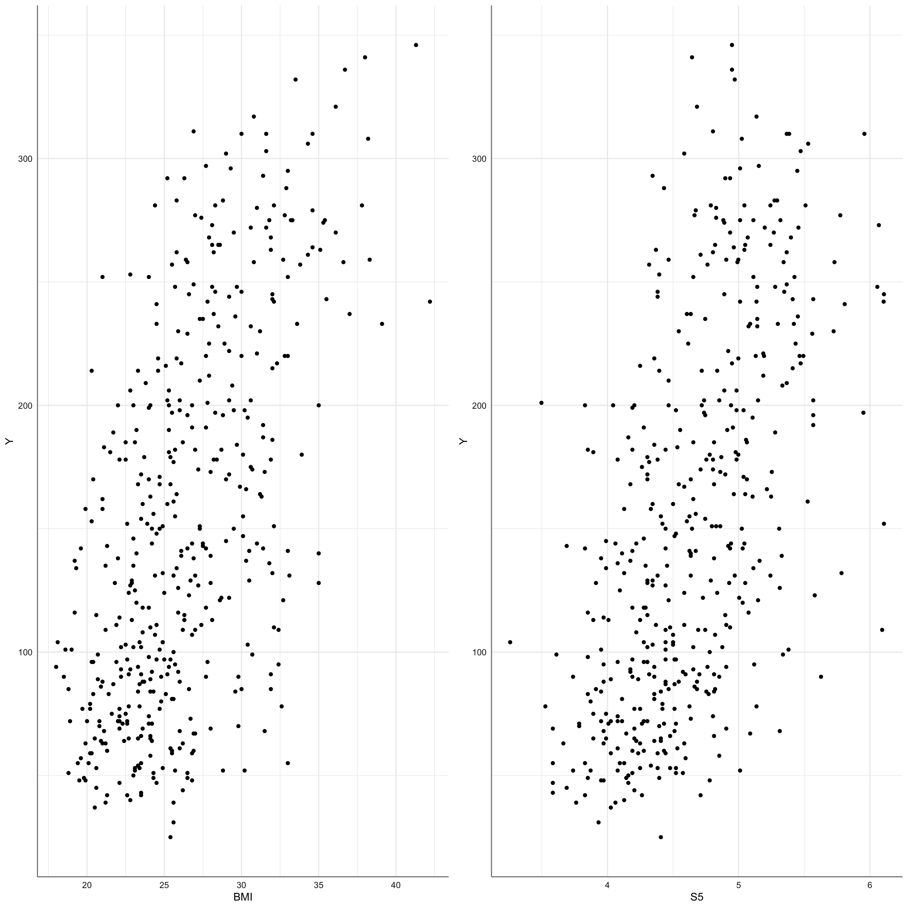

# Paquetes anteriores
library(tidyverse)
library(sjPlot)
library(knitr) # para formatos de tablas
library(skimr)
library(DataExplorer)
library(GGally)
library(gridExtra)
library(ggpubr)
theme_set(theme_sjplot2())
# Paquetes AA
library(mlr3verse)
library(mlr3tuning)
library(mlr3tuningspaces)
library(mlr3extralearners)6 Modelos de Regresión
Los modelos de aprendizaje automático de regresión lineal son de los más utilizados en el mundo real por su sencillez y rapidez de ejecución. Son modelos en los que se trata de explicar el comportamiento de una variable respuesta (de tipo numérico) a partir de un conjunto de variables predictoras (de tipo numérico o categórico) mediante una combinación lineal de ellas. El resultado de este tipo de modelos es obtener un valor de salida (predicción) a partir de dicha combinación lineal de forma que el valor se aproxime lo más posible al verdadero valor observado de la respuesta. Aplicaciones de este tipo de modelos son: análisis de las ventas de productos, el precio futuro de la vivienda, predicción de indicadores numéricos en salud, la predicción del PIB, predicción del crecimiento de entidades biológicas, predicción del rendimiento deportivo, etc.
Estos modelos tratan de aprender únicamente sobre la relación entre la respuesta y las predictoras a partir de un montón de datos históricos. De hecho, como veremos en el punto siguiente, estos modelos no necesitan de hiperparámetos para su ajuste. Por ejemplo, si estamos interesados en la predicción del precio de la vivienda para una ciudad en particular, necesitaríamos datos sobre los precios de la vivienda en varias partes de la ciudad. Cada muestra contiene información sobre cuántas habitaciones tiene la casa, a qué distancia está del centro de la ciudad, a qué distancia está del aeropuerto, si hay un hospital cerca, etc. La próxima vez, cuando se esté interesado en el precio de una vivienda que no está en el conjunto de datos utilizado, podremos utilizar la información de la característica de la vivienda para que utilizando el modelo obtenido podamos proporcionar una previsión de precios.
Entre las ventajas de este tipo de modelos encontramos que los resultados se pueden interpretar fácilmente y es más rápido de entrenar que otros modelos de aprendizaje automático. La parte negativa es que asume una combinación lineal entre las predictoras y la respuesta, lo que en muchas situaciones reales puede ser difícil de cumplir, además de que es sensible a los valores atípicos, de forma que el modelo puede tener cambios drásticos debido a la presencia de dichas observaciones.
Paquetes y configuración básica
6.1 Modelos de Regresión Lineal
A continuación se presentan brevemente los conceptos teóricos más relevantes de los modelos lineales de regresión con respuesta numérica.
6.1.1 Modelo de regresión Lineal Simple (RLS)
Para ilustrar las características de este modelo de aprendizaje comenzamos con el modelo más sencillo en el que únicamente consideramos una variable predictora de tipo numérico (\(x\)), conocido como modelo de regresión lineal simple y que se expresa matemáticamente como:
\[y = w_0 + w_1x + \epsilon, \tag{6.1}\]
donde:
\(w_0\) se conoce como interceptación o sesgo y representa el valor medio de la respuesta cuando la variable predictora no tiene influencia sobre ella, y se utiliza como modelo de partida.
\(w_1\) se conoce como pendiente y representa la variación de la respuesta al aumentar en una unidad el valor de la predictora, es decir, el cambio que sufre \(y\) cuando pasamos de \(x\) a \(x+1\), de forma que el valor de \(w_1\) determina si la relación entre \(x\) e \(y\) es directa (valor positivo) o inversa (valor negativo).
\(\epsilon\) se conoce como error aleatorio y representa la diferencia entre el valor observado de la respuesta y el valor predicho por el modelo, teniendo en cuenta que los valores de la respuesta para un mismo valor de la predictora pueden ser diferentes debido a otras variables que no aparecen en nuestro modelo de aprendizaje.
Tanto \(w_0\) como \(w_1\) son las cantidades desconocidas que el algoritmo debe estimar para alcanzar el modelo de predicción:
\[\hat{y} = \hat{w_0} + \hat{w_1}x, \tag{6.2}\]
donde el símbolo \(^\) indica los valores estimados mediante el modelo de \(w_0\) y \(w_1\), mientras que el error estimado viene dado por la diferencia entre el valor observado y el predicho por el modelo:
\[\hat{\epsilon} = y - \hat{y}. \tag{6.3}\]
Es evidente que cuanto menor sea el error estimado mejor será nuestro modelo, ya que más cerca estará el valor predicho del valor real observado. De hecho, las funciones de pérdida para este tipo de modelos se basan en estimar los valores de \(w_0\) y \(w_1\) de forma que el error cometido sea lo más pequeño posible.
De forma general, el modelo anterior se suele expresar en notación matricial como:
\[y = Xw + \epsilon \tag{6.4}\]
donde la primera columna de \(X\) es toda de unos para representar el efecto asociado a \(w_0\), de forma que en realidad la matriz \(X\) viene dada por \((1| x)\), es decir una matriz con dos columnas.
Dado un conjunto de datos \(\{(y_i, x_i)\}_{i=1}^n\), la función de pérdida habitual es el error cuadrático medio definido como:
\[\frac{1}{n}\sum_{i_1}^n (y_i - \hat{y}_i)^2 \tag{6.5}\] de donde se pueden obtener los valores estimados de \(w_0\) y \(w_1\) minimizando dicha cantidad para el rango de valores posibles de ambos parámetros. Gráficamente tenemos:

donde los puntos representan los pares de puntos \((x_i, y_i)\), la línea roja sería el modelo de regresión estimado, y la líneas verticales negras representan el error cometido por el modelo para cada muestra del conjunto de datos. Se trata pues de obtener el modelo que minimice el error conjunto para todos los elementos de la muestra.
La solución para \(w = (w_0, w_1)\) se obtiene entonces como el cuadrado de la norma 2 sobre los errores:
\[\underset{w}{min} ||y-Xw||_2^2, \tag{6.6}\]
que es la forma matemática de la minimización del error cuadrático medio.
6.1.2 Modelo Lineal General (MLG)
El Modelo Lineal General es una generalización del modelo anterior donde se dispone de una variable respuesta (\(y\)) de tipo numérico y una matriz de variables predictoras de tipo numérico y/o categórico, a partir del cual podemos obtener la matriz \(X\) mediante la codificación de las variables de tipo categórico junto las variables de tipo numérico. Si disponemos de \(p\) posibles predictoras el conjunto de datos
\[\{(y_i, x_{1i},...x_{pi})\}_{i=1}^n \tag{6.7}\]
nos proporciona los datos para la obtención de este modelo donde \(x_{ji}\) es el valor de la muestra \(i\) en la predictora \(j\), de forma que la ecuación del Modelo Lineal General viene dada por:
\[y = w_0 + w_1X_1+...+w_pX_p + \epsilon \tag{6.8}\]
donde cada \(w_j\) representa la pendiente o variación de la respuesta con respecto a cada predictora, y \(w_0\) representa el sesgo del modelo.
Como en el caso anterior el ajuste de este modelo se basa en obtener los valores de \(\hat{w}_0, \hat{w}_1,...,\hat{w}_p\) que minimicen el error cuadrático medio de los errores del modelo obtenidos como:
\[y - \hat{y} = y - \hat{w}_0 + \hat{w}_1X_1+...+\hat{w}_pX_p \tag{6.9}\]
De forma general, el modelo anterior se suele expresar en notación matricial como:
\[y = Xw + \epsilon \tag{6.10}\]
donde la primera columna de \(X\) es toda de unos para representar el efecto asociado a \(w_0\), de forma que en realidad la matriz \(X\) viene dada por \((1| X_1,...,X_p)\), es decir una matriz con \(p+1\) columnas.
Al igual que en el caso más simple, la solución de \(w = (w_0, w_1,...,w_p)\) se obtiene mediante la expresión:
\[\underset{w}{min} ||y-Xw||_2^2 \tag{6.11}\]
Como veremos más adelante, uno de los principales problemas que nos encontramos con este tipo de modelos es determinar que subconjunto de \(X\) es relevante para explicar el comportamiento de la respuesta. Dado que cada predictora numérica puede estar medida en escalas diferentes, es necesario expresar dichas variables en escala estandarizada para determinar la relevancia de cada una de ellas sobre la respuesta, ya que de lo contrario los pesos \(w_j\) no son comparables para dos predictoras medidas en escalas distintas.
El procedimiento habitual es corregir cada variable por su media y dividir por la norma 2 de sus valores para que las nuevas variables tengan media cero y varianza similar. Si todas las predictoras son de tipo numérico el modelo lineal se expresa como:
\[y' = w'_0 + w'_1X'_1+...+w'_pX'_p+ \epsilon \tag{6.12}\]
donde \(y', X'_1,...,X'_p\) son las variables normalizadas y los coeficientes \(w'_j\) ahora si son comparables para el conjunto de predictoras, de forma que los valores más grandes en valor absoluto indican mayor peso sobre la respuesta, mientras que el signo del coeficiente indica si la relación es directa o inversa con la respuesta.
6.2 Modelo Lineal General con mlr3
De los diferentes learner con los que se puede obtener un modelo lineal general nos vamos a centrar por le momento en el más sencillo de todos que es el regr.lm. Este algoritmo asume que el target es de tipo numérico y todos los efectos que pueden afectarlo se pueden describir mediante una ecuación del tipo @eq-rm012. Podemos acceder tanto a los parámetros como los métodos disponibles para este algoritmo en este enlace.
En el punto siguiente estudiamos como especificar la ecuación de este tipo de modelos cuando las características que utilizamos para predecir la respuesta son numéricas y/o factores. Algo muy importante a tener en cuenta en este tipo de modelos es que no resulta necesaria la codificación de los factores en el preprocesado, ya que el algoritmo lleva a cabo su propia codificación cuando detecta que una de las predictoras es un factor. Esto facilita esta tarea y nos permite escribir modelos más complejos sin tener que especificar la codificación. En R la codificación de factores se realiza fijando una categoría como referencia y comparando el resto frente a ella. Por defecto se utiliza contr.treatment(). En los ejemplos que trataremos veremos como interpretar los resultados del modelo teniendo en cuenta dicha codificación.
6.2.1 Especificación del modelo
Para especificar un modelo de este tipo utiliza la formulación habitual de R. Veamos diferentes situaciones en modelos muy sencillos donde tenemos un target numérico \(Y\), y que podremos generalizar en situaciones más complejas más tarde:
- Una predictora de tipo numérico (\(X_1\)). En este caso la ecuación del modelo viene dada por:
\[Y \sim X_1\]
donde \(X_1\) representa el efecto de regresión asociado con ella, es decir, la respuesta y \(X_1\) están relacionadas mediante una recta con una pendiente que deberemos estimar. Este es el denominado modelo de regresión lineal simple.
- Dos predictoras de tipo numérico (\(X_1\) y \(X_2\)). En este caso la ecuación del modelo viene dada por:
\[Y \sim X_1 + X_2\] donde \(X_1\) y \(X_2\) representan el efecto de regresión asociado con cada una de las variable numéricas, es decir, la respuesta y cada una de ellas están relacionadas mediante una recta con una pendiente que deberemos estimar. Este es el denominado modelo de regresión lineal múltiple.
- Una predictora de tipo categórico (\(F_1\)). En este caso la ecuación del modelo viene dada por:
\[Y \sim F_1\] donde \(F_1\) representa el efecto del factor que en este tipo de modelos lo que hace es comparar la media de la respuesta para cada uno de los niveles del factor considerado. En este caso no estimamos una pendiente sino una media directamente, es decir, es un modelo para la comparación de medias. Este es el denominado modelo de anova de una vía.
- Dos predictoras de tipo categórico (\(F_1\) y \(F_2\)). En este caso la ecuación del modelo viene dada por:
\[Y \sim F_1 + F_2 + F_1:F_2\] donde \(F_1\) y \(F_2\) representan los denominados efectos principales de los factores, es decir la comparación de medias de los nivel de cada factor (de forma independiente). Por otro lado, \(F_1:F_2\) representa el efecto de interacción entre ambos factores, es decir, comparamos las medias de la respuesta para las diferentes combinaciones de los niveles de ambos factores. Este es el denominado modelo anova de dos vías.
- Una predictora de tipo numérico (\(X_1\)) y otra de tipo categórico (\(F_1\)). En este caso la ecuación del modelo viene dada por:
\[Y \sim X_1 + F_1 + X_1:F_1\]
donde \(X_1\) representa el efecto de regresión asociado con la variable numérica, es decir, la respuesta y \(X_1\) están relacionadas mediante una única pendiente que deberemos estimar. \(F_1\) representa el efecto del factor, es decir, comparamos si las medias de la respuesta para cada grupo pueden considerarse iguales. \(X_1:F_1\) representa el efecto de interacción entre predictoras, es decir, que la respuesta se relaciona con la predictora numérica mediante tantas curvas (generalmente líneas) como niveles tenga el factor \(F_1\). Este es el denominado modelo ancova con una vía de clasificación.
Esto último modelo es el más habitual ya que generalmente en las predictoras podemos tener variables de diferentes tipos. Modelos que generalizan este último podrían ser:
- Modelo para dos factores (\(F_1\), \(F_2\)) y una numérica (\(X_1\)):
\[Y \sim F_1 + F_2 + F_1:F:2 + X_1 + F_1:X_1 + F_2:X_1 + F_1:F:2:X_1\] o de forma resumida \[Y \sim F_1*F_2*X_1\]
- Modelo para un factor (\(F_1\)) y dos numéricas (\(X_1\), \(X_2\)):
\[Y \sim F_1 + X_1 + X_2 + F_1:X_1 + F_1:X_2\] o de forma resumida \[Y \sim F_1*(X_1 + X_2)\]
- Modelo para dos factores (\(F_1\), \(F_2\)) y dos numéricas (\(X_1\), \(X_2\)):
\[Y \sim F_1 * F_2 *(X_1 + X_2)\]
Como se puede ver la complejidad del modelo aumenta sustancialmente con la consideración de más variables predictoras. En cualquier caso estas son las ecuaciones de os denominados modelos saturados, es decir, el más complejo que se puede establecer a partir de la información recogida. Como veremos en diferentes situaciones prácticas en ocasiones resulta más sencillo considerar modelos más sencillos que conocemos como modelos anidados. Para determinar el modelo de partida resulta obligatorio realizar un análisis descriptivo gráfico que nos permita establecer tendencias (gráficos de dispersión) o diferencias entre medias (gráficos de cajas).
Si el modelo considerado no contiene efectos de interacción la especificación del modelo saturado es automática y no hace falta escribir la ecuación correspondiente. Si se consideran interacciones es necesario escribir la ecuación del modelo para proceder con su estimación.
6.2.2 Bancos de datos
Para ejemplificar el uso de estos modelos vamos a utilizar los bancos de datos Diabetes (4.2.2), Meat spec (4.2.5), Electricity (4.2.3), y Housing in California (4.2.4) que presentamos en el capítulo 4.
A continuación se muestra el código para la carga de los diferentes bancos de datos y la creación de la correspondiente task de regresión para cada uno de ellos. A continuación definiremos los modelos saturados (cuando sea necesario) para cada uno de esos bancos de datos.
6.2.2.1 Diabetes
En un estudio sobre la diabetes se obtuvieron diez variables basales, edad, sexo, índice de masa corporal, presión arterial media y seis mediciones de suero sanguíneo para 442 pacientes diabéticos, así como la respuesta de interés, una medida cuantitativa de la progresión de la enfermedad un año después de la línea de base. Cada una de estas 10 variables predictoras se ha centrado en la media y se ha escalado por la desviación estándar multiplicada por la raíz cuadrada de n_muestras (es decir, la suma de los cuadrados de cada columna suma 1).
El target viene identificado con \(Y\) (progresión de la enfermedad) y las posibles predictoras como AGE, SEX, BMI, BP, S1, S2, S3, S4, S5, S6.
# Carga de datos
diabetes = read_rds("diabetes.rds")
# Creación de task
tsk_diabetes = as_task_regr(diabetes, target = "Y")
# información de la tarea
print(tsk_diabetes)<TaskRegr:diabetes> (442 x 11)
* Target: Y
* Properties: -
* Features (10):
- dbl (9): AGE, BMI, BP, S1, S2, S3, S4, S5, S6
- fct (1): SEXVeamos la representación gráfica de la información contenida en el banco de datos.
En la primera fila de la matriz podemos ver los valores de correlación de la respuesta con cada una de las predictoras numéricas, así como el gráfico de cajas con respecto a las predictoras categóricas. Aunque los coeficientes de correlación resultan significativos también es cierto que los valores obtenidos son bastante bajos salvo para BMI y S5. Tampoco parece apreciarse diferencias entre los niveles de SEX para la respuesta.
En la primera columna podemos ver los gráficos de dispersión entre predictoras y respuesta. Dado el elevado número de puntos no se aprecian tendencias en el comportamiento. Vamos a estudiar con algo más de detalle los gráficos de dispersión para las variables con mayores valores del coeficiente de correlación.
g1 <- ggplot(tsk_diabetes$data(), aes(x = BMI, y= Y)) + geom_point()
g2 <- ggplot(tsk_diabetes$data(), aes(x = S5, y= Y)) + geom_point()
ggarrange(g1, g2, nrow = 1)
Se aprecia cierta tendencia creciente en ambos gráficos, es decir, conforme aumentan los valores de la predictora aumenta el valor de la respuesta, pero como indicaban los valores de correlación esta no es muy elevada. Verificamos ahora que no tenemos valores perdidos en el conjunto de datos:
Dado que no hay missings podemos pasar a especificar el modelo saturado que utilizaremos en el punto siguiente.
6.2.2.2 Meat spec
El departamento de calidad de una empresa de alimentación se encarga de medir el contenido en grasa de la carne que comercializa. Este estudio se realiza mediante técnicas de analítica química, un proceso relativamente costoso en tiempo y recursos. Una alternativa que permitiría reducir costes y optimizar tiempo es emplear un espectrofotómetro (instrumento capaz de detectar la absorbancia que tiene un material a diferentes tipos de luz en función de sus características) e inferir el contenido en grasa a partir de sus medidas. Por lo tanto, el objetivo que se persigue es predecir el contenido en grasa (fat) a partir de los valores dados por el espectrofotómetro.El resto de variables almacenan los valores de los 100 puntos del espectrofómetro para cada una de las muestras.
En este caso tampoco tenemos valores perdidos pero no resulta útil la representación gráfica de los datos debido al alto número de predictoras. Por el momento creamos únicamente la tara de interés.
# Carga de datos
meatspec = read_rds("meatspec.rds")
meatspec = meatspec[,-1]
# Creación de task
tsk_meatspec = as_task_regr(meatspec, target = "fat")
# información de la tarea
print(tsk_meatspec)<TaskRegr:meatspec> (215 x 101)
* Target: fat
* Properties: -
* Features (100):
- dbl (100): V001, V002, V003, V004, V005, V006, V007, V008, V009,
V010, V011, V012, V013, V014, V015, V016, V017, V018, V019, V020,
V021, V022, V023, V024, V025, V026, V027, V028, V029, V030, V031,
V032, V033, V034, V035, V036, V037, V038, V039, V040, V041, V042,
V043, V044, V045, V046, V047, V048, V049, V050, V051, V052, V053,
V054, V055, V056, V057, V058, V059, V060, V061, V062, V063, V064,
V065, V066, V067, V068, V069, V070, V071, V072, V073, V074, V075,
V076, V077, V078, V079, V080, V081, V082, V083, V084, V085, V086,
V087, V088, V089, V090, V091, V092, V093, V094, V095, V096, V097,
V098, V099, V100Dado que no tenemos valores perdidos la única tarea de preprocesamiento es la estandarización de la variables numéricas. Definimos el pipeops necesario.
Dado que todas las predictoras son de tipo numérico no existen interacciones y no hace falta especificar el modelo.
6.2.2.3 Electricity
Una central eléctrica de ciclo combinado (CCPP) está compuesta por turbinas de gas (GT), turbinas de vapor (ST) y generadores de vapor de recuperación de calor. En una CCPP, la electricidad es generada por turbinas de gas y vapor, que se combinan en un ciclo, y se transfiere de una turbina a otra. Mientras que el Vacío se recolecta y tiene efecto sobre la Turbina de Vapor, las otras tres variables ambientales afectan el desempeño del GT. Este conjunto de de datos recogidos se ha recogido de una central eléctrica de ciclo combinado a lo largo de 6 años (2006-2011), cuando la central eléctrica estaba configurada para funcionar a plena carga. Las características consisten en variables ambientales promedio por hora: Temperatura (AT), Presión ambiental (AP), Humedad relativa (RH) y Vacío de escape (V) para predecir la producción de energía eléctrica neta por hora (PE) de la planta.
Creamos la tarea asociada, evaluamos la presencia de valores perdidos y representamos gráficamente la información contenida.
# Carga de datos
electricity = read_rds("electricity.rds")
# Creación de task
tsk_electricity = as_task_regr(electricity, target = "PE")
# información de la tarea
print(tsk_electricity)<TaskRegr:electricity> (9568 x 5)
* Target: PE
* Properties: -
* Features (4):
- dbl (4): AP, AT, RH, VEvaluamos la presencia de missings.
No hay missings. Realizamos el análisis gráfico.
Podemos ver que hay correlaciones bastante altas entre AT y V con PE, aunque solo parece que el comportamiento lineal esta asociado con AT, mientras que con V la tendencia tiene una forma curvilínea. Definimos el objeto de preprocesado asociado con la estandarización de las predictoras.
Como en el caso anterior no resulta necesario explicitar el modelo, ya que todas las predictoras son de tipo numérico.
6.2.2.4 Housing in California
En este ejemplo vamos a utilizar la base de datos HousingCA, que recoge la información sobre el censo viviendas de California en el año 1990. Se está interesado en predecir el valor medio de la vivienda (median_house_value) medido en dólares americanos en función de las predictoras. Cargamos los datos y valoramos la presencia de missings.
# Carga de datos
housingCA = read_rds("housingCA.rds")
# Creación de task
tsk_housing = as_task_regr(housingCA, target = "median_house_value")
# información de la tarea
print(tsk_housing)<TaskRegr:housingCA> (20640 x 10)
* Target: median_house_value
* Properties: -
* Features (9):
- dbl (8): households, housing_median_age, latitude, longitude,
median_income, population, total_bedrooms, total_rooms
- fct (1): ocean_proximityEvaluamos la presencia de missings.
median_house_value households housing_median_age latitude
0 0 0 0
longitude median_income ocean_proximity population
0 0 0 0
total_bedrooms total_rooms
207 0 La única característica donde aparecen valores perdidos es total_bedrooms. Podemos definir un objeto de preprocesado donde imputemos los valores missings para esa variable y a su vez estandarizamos los valores de las características numéricas. Como método de imputación utilizaremos la mediana de los valores de la característica.
Realizamos el análisis descriptivo gráfico del conjunto de datos ignorando por el momento la presencia de valores perdidos.
Tan solo se aprecia una correlación alta entre la respuesta y median_income, mientras que para el resto todas las correlaciones son bastante bajas. Además no se aprecia ninguna tendencia clara en los gráficos de dispersión. Sin embargo, si podemos ver ciertas diferencias en el gráfico de cajas de la proximidad al océano.
Como en este caso si disponemos de predictoras categóricas resulta necesario especificar el modelo saturado para tener en cuenta las interacciones entre las predictoras numéricas y el factor.
6.2.3 Nuestros primeros modelos
En este punto presentamos los modelos saturados para cada uno de los bancos de datos de ejemplos que hemos presentado en el punto anterior. Para los primeros resultados utilizaremos una división de muestras 80% - 20% (entrenamiento - validación), para determinar las predictoras más relevantes, y más tarde realizaremos un estudio de estabilidad de la solución mediante validación cruzada.
6.2.3.1 Diabetes
En este caso no tenemos tareas de preprocesado y nos vamos a centrar directamente en el establecimiento del proceso de aprendizaje a partir del modelo saturado que hemos definido en el punto anterior. La mayor dificultad con el algoritmo regr.lm es que no nos permite realzar un proceso de selección de variables de forma automática. La única opción que tenemos es definir un filter adecuado y obtener los valores para la muestra de entrenamiento. Sin embargo, en este tipo de modelos esta estrategia no es óptima dado que los filter no nos permiten evaluar directamente los efectos de interacción entre predictoras numéricas y factores.
A continuación vamos a presentar un procedimiento para seleccionar los efectos relevantes el modelo basados en el estadístico AIC, y más tarde automatizaremos ese modelo para realizar un estudio de validación de la solución obtenida. En primer lugar obtenemos la muestra de entrenamiento y validación que utilizaremos para la valoración de efectos.
# Fijamos semilla para asegurar la reproducibilidad del modelo
set.seed(135)
# Creamos la partición
splits = mlr3::partition(tsk_diabetes, ratio = 0.8)
# Muestras de entrenamiento y validación
tsk_train_diabetes = tsk_diabetes$clone()$filter(splits$train)
tsk_test_diabetes = tsk_diabetes$clone()$filter(splits$test)Para el ajuste del modelo lineal hacemos uso de la función lm() en la que únicamente debemos identificar el modelo deseado (en este caso el saturado), y el conjunto de datos sobre el que vamos a ajustar dicho modelo. A continuación utilizamos la función step() de la librería stats que toma el modelo saturado y mediante una búsqueda adelante-atrás determina el conjunto de efectos que más influye en la respuesta mediante el estadístico AIC. Este estadístico selecciona como mejor modelo aquel con un menor valor de AIC de todos los que se pueden construir al ir eliminando efectos en el modelo saturado. Por último utilizamos la función summary() para ver el modelo resultante (coeficientes, capacidad explicativa,…).
fit = lm(Y ~ (AGE + BMI + BP + S1 + S2 + S3 + S4 + S5 + S6)*SEX, data = tsk_train_diabetes$data())
fit = stats::step(fit)Start: AIC=2821.13
Y ~ (AGE + BMI + BP + S1 + S2 + S3 + S4 + S5 + S6) * SEX
Df Sum of Sq RSS AIC
- BP:SEX 1 453.6 932397 2819.3
- S3:SEX 1 544.9 932489 2819.3
- S4:SEX 1 664.5 932608 2819.4
- S1:SEX 1 1784.0 933728 2819.8
- S5:SEX 1 2167.4 934111 2819.9
- S2:SEX 1 2592.7 934536 2820.1
<none> 931944 2821.1
- BMI:SEX 1 5578.9 937523 2821.2
- S6:SEX 1 7848.9 939793 2822.1
- AGE:SEX 1 20919.9 952864 2827.0
Step: AIC=2819.3
Y ~ AGE + BMI + BP + S1 + S2 + S3 + S4 + S5 + S6 + SEX + AGE:SEX +
BMI:SEX + S1:SEX + S2:SEX + S3:SEX + S4:SEX + S5:SEX + S6:SEX
Df Sum of Sq RSS AIC
- S3:SEX 1 564 932961 2817.5
- S4:SEX 1 728 933125 2817.6
- S1:SEX 1 1828 934225 2818.0
- S5:SEX 1 2051 934448 2818.1
- S2:SEX 1 2620 935018 2818.3
<none> 932397 2819.3
- BMI:SEX 1 6940 939338 2819.9
- S6:SEX 1 8548 940945 2820.5
- AGE:SEX 1 22713 955110 2825.8
- BP 1 65680 998077 2841.3
Step: AIC=2817.52
Y ~ AGE + BMI + BP + S1 + S2 + S3 + S4 + S5 + S6 + SEX + AGE:SEX +
BMI:SEX + S1:SEX + S2:SEX + S4:SEX + S5:SEX + S6:SEX
Df Sum of Sq RSS AIC
- S4:SEX 1 209 933171 2815.6
- S5:SEX 1 1574 934536 2816.1
- S1:SEX 1 1816 934777 2816.2
- S2:SEX 1 2427 935388 2816.4
- S3 1 3667 936629 2816.9
<none> 932961 2817.5
- BMI:SEX 1 6987 939948 2818.2
- S6:SEX 1 8536 941497 2818.7
- AGE:SEX 1 22535 955496 2823.9
- BP 1 65706 998667 2839.5
Step: AIC=2815.6
Y ~ AGE + BMI + BP + S1 + S2 + S3 + S4 + S5 + S6 + SEX + AGE:SEX +
BMI:SEX + S1:SEX + S2:SEX + S5:SEX + S6:SEX
Df Sum of Sq RSS AIC
- S3 1 3685 936855 2815.0
- S1:SEX 1 4092 937263 2815.1
- S5:SEX 1 5289 938459 2815.6
<none> 933171 2815.6
- BMI:SEX 1 7008 940179 2816.2
- S2:SEX 1 7413 940584 2816.4
- S6:SEX 1 8400 941570 2816.8
- S4 1 10729 943900 2817.6
- AGE:SEX 1 22692 955862 2822.1
- BP 1 65505 998676 2837.5
Step: AIC=2814.99
Y ~ AGE + BMI + BP + S1 + S2 + S4 + S5 + S6 + SEX + AGE:SEX +
BMI:SEX + S1:SEX + S2:SEX + S5:SEX + S6:SEX
Df Sum of Sq RSS AIC
- S1:SEX 1 2331 939186 2813.9
- S5:SEX 1 3781 940637 2814.4
- S2:SEX 1 5109 941964 2814.9
<none> 936855 2815.0
- BMI:SEX 1 7097 943953 2815.7
- S4 1 7336 944191 2815.7
- S6:SEX 1 7595 944451 2815.8
- AGE:SEX 1 21790 958645 2821.1
- BP 1 64952 1001807 2836.7
Step: AIC=2813.86
Y ~ AGE + BMI + BP + S1 + S2 + S4 + S5 + S6 + SEX + AGE:SEX +
BMI:SEX + S2:SEX + S5:SEX + S6:SEX
Df Sum of Sq RSS AIC
- S5:SEX 1 1613 940799 2812.5
- S2:SEX 1 4566 943753 2813.6
<none> 939186 2813.9
- BMI:SEX 1 5600 944786 2814.0
- S4 1 6746 945932 2814.4
- S6:SEX 1 7628 946815 2814.7
- S1 1 14039 953225 2817.1
- AGE:SEX 1 23630 962816 2820.6
- BP 1 63557 1002743 2835.0
Step: AIC=2812.47
Y ~ AGE + BMI + BP + S1 + S2 + S4 + S5 + S6 + SEX + AGE:SEX +
BMI:SEX + S2:SEX + S6:SEX
Df Sum of Sq RSS AIC
- BMI:SEX 1 4477 945276 2812.2
<none> 940799 2812.5
- S2:SEX 1 5709 946508 2812.6
- S6:SEX 1 6258 947057 2812.8
- S4 1 6515 947314 2812.9
- S1 1 15012 955810 2816.1
- AGE:SEX 1 22504 963303 2818.8
- S5 1 55035 995834 2830.5
- BP 1 63636 1004435 2833.6
Step: AIC=2812.15
Y ~ AGE + BMI + BP + S1 + S2 + S4 + S5 + S6 + SEX + AGE:SEX +
S2:SEX + S6:SEX
Df Sum of Sq RSS AIC
- S2:SEX 1 4403 949679 2811.8
<none> 945276 2812.2
- S4 1 7330 952607 2812.9
- S6:SEX 1 11303 956579 2814.3
- S1 1 13764 959040 2815.2
- AGE:SEX 1 23748 969024 2818.9
- S5 1 53777 999053 2829.7
- BP 1 66586 1011863 2834.2
- BMI 1 172186 1117462 2869.2
Step: AIC=2811.79
Y ~ AGE + BMI + BP + S1 + S2 + S4 + S5 + S6 + SEX + AGE:SEX +
S6:SEX
Df Sum of Sq RSS AIC
- S2 1 4433 954111 2811.4
<none> 949679 2811.8
- S4 1 7553 957231 2812.6
- S6:SEX 1 8943 958621 2813.1
- S1 1 14195 963874 2815.0
- AGE:SEX 1 21094 970773 2817.5
- S5 1 53738 1003416 2829.2
- BP 1 66034 1015713 2833.5
- BMI 1 175163 1124842 2869.5
Step: AIC=2811.43
Y ~ AGE + BMI + BP + S1 + S4 + S5 + S6 + SEX + AGE:SEX + S6:SEX
Df Sum of Sq RSS AIC
<none> 954111 2811.4
- S6:SEX 1 8005 962116 2812.4
- AGE:SEX 1 22251 976362 2817.6
- S1 1 27635 981747 2819.5
- S4 1 39145 993256 2823.6
- BP 1 65368 1019480 2832.8
- S5 1 78978 1033090 2837.5
- BMI 1 192685 1146796 2874.4
Call:
lm(formula = Y ~ AGE + BMI + BP + S1 + S4 + S5 + S6 + SEX + AGE:SEX +
S6:SEX, data = tsk_train_diabetes$data())
Residuals:
Min 1Q Median 3Q Max
-155.393 -37.026 -0.527 35.162 138.780
Coefficients:
Estimate Std. Error t value Pr(>|t|)
(Intercept) -394.9460 41.3415 -9.553 < 2e-16 ***
AGE 0.6397 0.3211 1.992 0.047143 *
BMI 6.1483 0.7398 8.311 2.27e-15 ***
BP 1.1851 0.2448 4.841 1.96e-06 ***
S1 -0.3285 0.1044 -3.147 0.001792 **
S4 12.1557 3.2451 3.746 0.000211 ***
S5 40.6817 7.6460 5.321 1.87e-07 ***
S6 0.5709 0.4125 1.384 0.167250
SEX1 165.6431 48.6522 3.405 0.000741 ***
AGE:SEX1 -1.2606 0.4464 -2.824 0.005019 **
S6:SEX1 -0.9028 0.5329 -1.694 0.091187 .
---
Signif. codes: 0 '***' 0.001 '**' 0.01 '*' 0.05 '.' 0.1 ' ' 1
Residual standard error: 52.82 on 342 degrees of freedom
Multiple R-squared: 0.5399, Adjusted R-squared: 0.5265
F-statistic: 40.14 on 10 and 342 DF, p-value: < 2.2e-16El modelo obtenido nos da una tabla con los efectos del modelo que son seleccionados por el AIC, así como los coeficientes que dichos efectos tienen en el modelo. En este caso podemos ver que los efectos más relevantes se corresponden con BMI y S5 con coeficientes positivos, indicando que cuando aumentan los valores de esas predictoras más aumenta el valor de la respuesta. Puesto que las variables están estandarizadas el coeficiente también refleja el peso de cada predictora en la respuesta. Por otro lado, aunque el coeficiente asociado con SEX es el más elevado no tiene sentido su interpretación ya que en el modelo están presentes diferentes efectos de interacción relacionados con dicho factor, En esa situación los coeficientes más relevantes son los de la interacción.
El modelo no tiene una capacidad explicada muy elevada dado que el \(R^2\) se sitúa en 53% y el MSE es de 2767.502 (residual standard error^2).
Las ecuaciones del modelo resultante son:
Para los sujetos de SEX = 1
\[\hat{Y} = (-431.1117+134.9858) + (0.5030-1.0742)*AGE + (6.7845-2.3455)*BMI + 1.1940*BP -1.0872*S1 + 0.8818*S2 + 77.3292*S5\] o lo que es o mismo
\[\hat{Y} = -296.1259 -0.5712*AGE + 4.439*BMI + 1.1940*BP -1.0872*S1 + 0.8818*S2 + 77.3292*S5\] En este caso el progreso de la enfermedad aumenta con BMI, BP, S2 y S5, y disminuye con AGE y S1 para los individuos codificados con SEX =1
Para los sujetos de SEX = 2
\[\hat{Y} = -431.1117 + 0.5030*AGE + 6.7845*BMI + 1.1940*BP -1.0872*S1 + 0.8818*S2 + 77.3292*S5\] En este caso todos los indicadores son positivos salvo S1.
Una vez hemos identificado los efectos que parecen mas relevantes para explicar el comportamiento de la respuesta, vamos a estudiar la validez construyendo un grpahlearner que nos permita entrenar el modelo de forma sencilla y evaluar individualmente y mediante validación cruzada k-fold el modelo propuesto. para ello definimos el nuevo modelo, establecemos el learner adecuado y utilizamos la medida de valoración del modelo basada en el MSE.
# Algoritmo de aprendizaje
learner = lrn("regr.lm")
# Modelo en términos de predictoras
diabetes_model = po("modelmatrix", formula = ~ AGE + BMI + BP + S1 + S2 + S5 + SEX + AGE:SEX + BMI:SEX)
# Graphlearner: Estructura del modelo y learner
gr = diabetes_model %>>% learner
gr = GraphLearner$new(gr)
# Entrenamiento del modelo
gr$train(tsk_train_diabetes)
# Resumen del modelo
summary(gr$model$regr.lm$model)
Call:
stats::lm(formula = task$formula(), data = task$data())
Residuals:
Min 1Q Median 3Q Max
-157.498 -36.293 1.277 33.511 132.232
Coefficients: (1 not defined because of singularities)
Estimate Std. Error t value Pr(>|t|)
(Intercept) -421.8006 35.4754 -11.890 < 2e-16 ***
`(Intercept)` NA NA NA NA
AGE 0.6698 0.3191 2.099 0.036559 *
BMI 7.3311 1.0307 7.113 6.66e-12 ***
BP 1.1522 0.2429 4.744 3.08e-06 ***
S1 -0.9862 0.2424 -4.069 5.87e-05 ***
S2 0.8962 0.2507 3.574 0.000402 ***
S5 66.7037 7.9297 8.412 1.10e-15 ***
SEX1 143.4395 37.6309 3.812 0.000164 ***
`AGE:SEX1` -1.3080 0.4385 -2.983 0.003059 **
`BMI:SEX1` -2.2094 1.2862 -1.718 0.086753 .
---
Signif. codes: 0 '***' 0.001 '**' 0.01 '*' 0.05 '.' 0.1 ' ' 1
Residual standard error: 52.85 on 343 degrees of freedom
Multiple R-squared: 0.538, Adjusted R-squared: 0.5259
F-statistic: 44.38 on 9 and 343 DF, p-value: < 2.2e-16Como era de esperar el modelo obtenido es el mismo, dado que el algoritmo regr.lm se basa en la función lm para su ajuste. Obtenemos la predicción del modelo tanto para la muestra de entrenamiento como de validación y representamos las soluciones obtenidas
# Predicción de la muestra de entrenamiento
pred_train = gr$predict(tsk_train_diabetes)
# Predicción de la muestra de validación
pred_test = gr$predict(tsk_test_diabetes)
# Scores de validación
measures = msr(c("regr.mse"))
# Valores de validación entrenamiento y validación
pred_train$score(measures)regr.mse
2714.173 regr.mse
3080.09 Como era de esperar el MSE para la muestra de validación es superior al de la muestra de entrenamiento. A continuación vemos la solución gráfica para el modelo de aprendizaje que hemos entrenado. En concreto realizamos los gráficos:
- Valores observados reales versus predichos por el modelo, donde pretendemos ver cuanto de buena es nuestra predicción con respecto a los valores observados realmente.
- Valores observados reales frente a residuos del modelo, donde queremos observar is estos últimamente se comportan de forma adecuada, es decir, tiene un comportamiento aleatorio y se centran en cero.
- Histograma de los residuos del modelo para analizar su normalidad, es decir, comportamiento simétrico con respecto al cero y con forma de campana de Gauss.
Realizamos los gráficos anteriores tanto para la muestra de entrenamiento como la de validación:
# Muestra de entrenamiento
p1 = autoplot(pred_train, type = "xy") + labs(title = "Observados vs predichos")
p2 = autoplot(pred_train, type = "residual") + labs(title = "Observados vs residuos")
p3 = autoplot(pred_train, type = "histogram") + labs(title = "Histograma residuos")
# Muestra de validación
p4 = autoplot(pred_test, type = "xy") + labs(title = "Observados vs predichos")
p5 = autoplot(pred_test, type = "residual") + labs(title = "Observados vs residuos")
p6 = autoplot(pred_test, type = "histogram") + labs(title = "Histograma residuos")
ggarrange(p1,p2,p3, p4, p5, p6, nrow = 2, ncol = 3)
En los gráficos de observados vs predichos podemos ver que la nube de puntos se encuentra centrada sobre la diagonal (ajuste perfecto) pero con una gran variabilidad (dispersión) lo que provoca un MSE bastante alto e indica una bajo valor predictivo.
En los gráficos de observados frente a residuos podemos ver que se encuentran centrados en cero pero su comportamiento no es totalmente aleatorio, ya que se observa una mayor dispersión en los valores centrales de la respuesta, mientras que es menor en los extremos. Esto implica que le modelo lineal propuesto no es muy adecuado y es necesario una modificación o la consideración de otro algoritmo para predecir la repuesta de interés.
En los histogramas de los residuos podemos ver que se encuentran centrados en cero y su comportamiento se parece bastante al de la campana de Gauss, indicando la normalidad de los residuos del modelo.
Una vez hemos analizado el modelo propuesto en detalle vamos a realizar un estudio de validación cruzada para valorar la estabilidad de la solución obtenida. utilizamos el modelo definido anteriormente y la misma métrica de validación.
# Fijamos semilla
set.seed(135)
# Definimos proceso de validación cruzada kfold con k=10
resamp = rsmp("cv", folds = 10)
# Remuestreo
rr = resample(tsk_diabetes, gr, resamp, store_models=TRUE)INFO [17:35:28.925] [mlr3] Applying learner 'modelmatrix.regr.lm' on task 'diabetes' (iter 1/10)
INFO [17:35:29.089] [mlr3] Applying learner 'modelmatrix.regr.lm' on task 'diabetes' (iter 2/10)
INFO [17:35:29.952] [mlr3] Applying learner 'modelmatrix.regr.lm' on task 'diabetes' (iter 3/10)
INFO [17:35:30.060] [mlr3] Applying learner 'modelmatrix.regr.lm' on task 'diabetes' (iter 4/10)
INFO [17:35:30.171] [mlr3] Applying learner 'modelmatrix.regr.lm' on task 'diabetes' (iter 5/10)
INFO [17:35:30.283] [mlr3] Applying learner 'modelmatrix.regr.lm' on task 'diabetes' (iter 6/10)
INFO [17:35:30.407] [mlr3] Applying learner 'modelmatrix.regr.lm' on task 'diabetes' (iter 7/10)
INFO [17:35:30.518] [mlr3] Applying learner 'modelmatrix.regr.lm' on task 'diabetes' (iter 8/10)
INFO [17:35:30.638] [mlr3] Applying learner 'modelmatrix.regr.lm' on task 'diabetes' (iter 9/10)
INFO [17:35:30.781] [mlr3] Applying learner 'modelmatrix.regr.lm' on task 'diabetes' (iter 10/10)En primer lugar estudiamos los scores de validación (en este caso el MSE) tanto para cada fold como de forma agregada.
[1] 3334.607 2955.360 2178.192 2561.333 4644.915 2770.456 2924.532 2070.048
[9] 2718.506 2974.108Podemos ver una gran dispersión en los valores de los scores lo que puede ser debido a la gran dispersión de los datos originales. Vamos a estudiar las soluciones individuales de todos los folds analizando los modelos estimados y la predicción obtenida con cada uno de ellos.
En primer lugar analizamos la ecuación del modelo para cada fold.
# Número de folds
nfolds = 10
# Coeficientes primer fold
fold_coef = rr$learners[[1]]$model$regr.lm$model$coefficients[-2]
# Bucle con el resto de folds
for (i in 2:nfolds)
{
pre = rr$learners[[i]]$model$regr.lm$model$coefficients[-2]
fold_coef = rbind(fold_coef, pre)
}
rownames(fold_coef) = paste("fold ", 1:nfolds)
fold_coef (Intercept) AGE BMI BP S1 S2 S5
fold 1 -445.2340 0.8439358 7.603690 1.0619125 -0.9440420 0.7804093 70.68828
fold 2 -412.3563 0.6042516 6.889477 0.9782751 -1.0823745 0.8894872 75.42517
fold 3 -445.5676 0.6707123 6.944082 1.1762567 -1.0540675 0.8537913 76.67291
fold 4 -422.9322 0.7105352 6.704040 1.1712944 -0.9833478 0.8107907 71.80353
fold 5 -434.4493 0.7316720 7.237216 1.2056449 -0.9309912 0.6996666 70.26252
fold 6 -420.8541 0.4394769 7.305076 1.0025348 -1.1581269 0.9838786 77.16000
fold 7 -428.9777 0.6316744 7.113376 1.1264266 -0.9712969 0.7793862 72.39982
fold 8 -439.9584 0.6814086 6.798735 1.1593487 -1.0309974 0.9018838 74.74262
fold 9 -434.3076 0.7256529 7.084248 1.2269260 -1.0589913 0.8645149 71.99122
fold 10 -441.9177 0.7355721 6.732934 1.2702042 -1.0249756 0.8833135 73.35674
SEX1 `AGE:SEX1` `BMI:SEX1`
fold 1 158.5127 -1.6047008 -2.212433
fold 2 122.6085 -1.1793687 -1.645068
fold 3 155.6093 -1.2738598 -2.596898
fold 4 133.6826 -1.3464280 -1.819396
fold 5 131.7663 -1.1053187 -2.073289
fold 6 131.1494 -0.7852138 -2.754880
fold 7 145.4958 -1.2275106 -2.444391
fold 8 148.9179 -1.3459060 -2.271558
fold 9 146.1860 -1.3302285 -2.262392
fold 10 151.5196 -1.4401144 -2.241624Podemos ver que las estimaciones de los modelos en cada fold son muy similares para todos los efectos del modelo. hay bastante estabilidad en la construcción del modelo dentro de cada fold. En la tabla siguiente podemos ver el resumen de cada coeficiente (media y desviación típica) para todos los folds.
descrip = function(x)
{
c(mean(x),sd(x))
}
tabla = apply(fold_coef,2,descrip)
rownames(tabla) = c("Media", "sd")
tabla (Intercept) AGE BMI BP S1 S2
Media -432.65548 0.6774892 7.0412874 1.13788240 -1.0239211 0.84471219
sd 11.20222 0.1062489 0.2850842 0.09590241 0.0691617 0.07971934
S5 SEX1 `AGE:SEX1` `BMI:SEX1`
Media 73.450282 142.54482 -1.2638649 -2.2321929
sd 2.437234 11.97597 0.2180697 0.3324235Los coeficientes siguen la misma interpretación que vimos en el modelo inicial, y la variabilidad de la estimación es pequeña en comparación con el valor estimado del coeficiente (sobre todo en los efectos más relevantes BMI, S5, y las interacciones de AGE y BMI con SEX).
A continuación realizamos un análisis gráfico de cada uno de los modelos de cada fold. Para ello utilizamos las predicciones asociados a cada uno de ellos.
p1 = autoplot(rr$predictions()[[1]], type = "xy") + labs(title = "Obs vs Pre (f1)")
p2 = autoplot(rr$predictions()[[2]], type = "xy") + labs(title = "Obs vs Pre (f2)")
p3 = autoplot(rr$predictions()[[3]], type = "xy") + labs(title = "Obs vs Pre (f3)")
p4 = autoplot(rr$predictions()[[4]], type = "xy") + labs(title = "Obs vs Pre (f4)")
p5 = autoplot(rr$predictions()[[5]], type = "xy") + labs(title = "Obs vs Pre (f5)")
p6 = autoplot(rr$predictions()[[6]], type = "xy") + labs(title = "Obs vs Pre (f6)")
p7 = autoplot(rr$predictions()[[7]], type = "xy") + labs(title = "Obs vs Pre (f7)")
p8 = autoplot(rr$predictions()[[8]], type = "xy") + labs(title = "Obs vs Pre (f8)")
p9 = autoplot(rr$predictions()[[9]], type = "xy") + labs(title = "Obs vs Pre (f9)")
p10 = autoplot(rr$predictions()[[10]], type = "xy") + labs(title = "Obs vs Pre (f10)")
ggarrange(p1, p2, p3, p4, p5, p6, p7, p8, p9, p10, nrow = 3, ncol = 4)Como era de esperar el comportamiento en todos los fold es similar. El objeto resampling nos permite combinar las predicciones de cada uno de los fold en un único objeto con el método prediction(). Esto nos da la posibilidad de realizar los gráficos para analizar el modelo obtenido:
p1 = autoplot(rr$prediction(), type = "xy") + labs(title = "Observados vs predichos")
p2 = autoplot(rr$prediction(), type = "residual") + labs(title = "Observados vs residuos")
p3 = autoplot(rr$prediction(), type = "histogram") + labs(title = "Histograma residuos")
ggarrange(p1, p2, p3, nrow = 1, ncol = 3)Los resultados obtenidos son similares a los del modelo inicial con la muestra de validación.
Para finalizar nuestra primera aproximación al modelo propuesto vamos a realizar el análisis de la curva de aprendizaje asociada con este modelo. El análisis de la curva de aprendizaje nos permite estudiar como mejora el aprendizaje del modelo planteado conforme vamos aumentando el tamaño de la muestra de entrenamiento. Esto nos permite determinar el tamaño de la muestra de aprendizaje para que la solución sea estable.
El proceso es similar al de validación cruzada descrito en el punto anterior. Se utilizan subconjuntos del conjunto de entrenamiento con tamaños variables para entrenar el modelo y se calcula una puntuación para cada tamaño de subconjunto de entrenamiento y el conjunto de validación. Después, las puntuaciones obtenidas se promediarán para las k ejecuciones en cada tamaño de subconjunto de entrenamiento.
Para realizar esta tarea nos apoyamos en la función rsmp() con la opción subsampling donde podemos fijar el número de repeticiones que deseamos para una partición de muestras de entrenamiento y validación. Con la función resample() nos resulta posible obtener los valores del score buscado tanto para la muestra de entrenamiento como de validación. En primer lugar definimos dos funciones learningcurve y plot_learningcurve que nos permiten obtener los valores de la curva de aprendizaje y su representación gráfica. Los parámetros de ambas funciones son los mismos y vienen definidos en la función.
# Función que nos permite obtener los valores asociados a la curva de aprendizaje
learningcurve = function(task, learner, score, ptr, rpeats)
{
# Parámetros de la función
# task: tarea
# learner: algoritmo de aprendizaje
# score: nombre del score a utilizar
# ptr: vector con las proporciones de tamaños de muestra de entrenamiento
# rpeats: número de repeticiones para cada proporción de tamaño de muestra de entrenamiento
# Definimos los scores para cada conjunto de muestra
mtrain = msr(score, predict_sets = "train")
mtest = msr(score, predict_sets = "test")
# Configuramos el learner para que evalué los scores en la muestra de validación y test
learner$predict_sets = c("train", "test")
# Incicializamos vector de scores agregados para la muestra de entrenamiento y validación
sco_train = c()
sco_test = c()
for(i in 1:length(ptr))
{
# estructura de muestreo: 5 repeticiones con porcentaje muestra entrenamiento ptr[i]
subsam = rsmp("subsampling", repeats = rpeats, ratio = ptr[i])
# ejecución de remuestreo
rr = resample(task, learner, subsam)
sco_train[i] = rr$aggregate(mtrain)
sco_test[i] = rr$aggregate(mtest)
}
# Matriz de resultados
res = data.frame(ptr, sco_train, sco_test)
resdf = res %>% pivot_longer(!ptr, names_to = "Sample", values_to = "MSR")
return(resdf)
}
# Función que nos permite representar la curva de aprendizaje
plot_learningcurve = function(task, learner, score, ptr, rpeats)
{
# Parámetros de la función
# task: tarea
# learner: algoritmo de aprendizaje
# score: nombre del score a utilizar
# ptr: vector con las proporciones de tamaños de muestra de entrenamiento
# rpeats: número de repeticiones para cada proporción de tamaño de muestra de entrenamiento
lcurve = learningcurve(task, gr, score, ptr, rpeats)
# Gráfico
ggplot(lcurve, aes(ptr, MSR, color = Sample)) +
geom_line() +
labs(x ="Proporción tamaño muestra entrenamiento", y = "MSE",color = "Muestra") +
scale_color_hue(labels = c("Validación", "Entrenamiento")) +
scale_x_continuous(breaks=ptr)
}A continuación se muestra la curva de aprendizaje para un un grid de porcentajes que va desde el 10% al 90% del tamaño de la muestra de entrenamiento con diez repeticiones para cada tamaño.
# Algoritmo de aprendizaje
learner = lrn("regr.lm")
# Modelo en términos de predictoras
diabetes_model = po("modelmatrix", formula = ~ AGE + BMI + BP + S1 + S2 + S5 + SEX + AGE:SEX + BMI:SEX)
# Graphlearner: Estructura del modelo y learner
gr = diabetes_model %>>% learner
gr = GraphLearner$new(gr)
plot_learningcurve(tsk_diabetes, gr, "regr.mse", ptr = seq(0.1, 0.9, 0.1), rpeats = 10)INFO [17:35:38.585] [mlr3] Applying learner 'modelmatrix.regr.lm' on task 'diabetes' (iter 1/10)
INFO [17:35:38.879] [mlr3] Applying learner 'modelmatrix.regr.lm' on task 'diabetes' (iter 2/10)
INFO [17:35:39.331] [mlr3] Applying learner 'modelmatrix.regr.lm' on task 'diabetes' (iter 3/10)
INFO [17:35:39.564] [mlr3] Applying learner 'modelmatrix.regr.lm' on task 'diabetes' (iter 4/10)
INFO [17:35:39.827] [mlr3] Applying learner 'modelmatrix.regr.lm' on task 'diabetes' (iter 5/10)
INFO [17:35:40.041] [mlr3] Applying learner 'modelmatrix.regr.lm' on task 'diabetes' (iter 6/10)
INFO [17:35:40.287] [mlr3] Applying learner 'modelmatrix.regr.lm' on task 'diabetes' (iter 7/10)
INFO [17:35:40.535] [mlr3] Applying learner 'modelmatrix.regr.lm' on task 'diabetes' (iter 8/10)
INFO [17:35:40.778] [mlr3] Applying learner 'modelmatrix.regr.lm' on task 'diabetes' (iter 9/10)
INFO [17:35:41.017] [mlr3] Applying learner 'modelmatrix.regr.lm' on task 'diabetes' (iter 10/10)
INFO [17:35:41.352] [mlr3] Applying learner 'modelmatrix.regr.lm' on task 'diabetes' (iter 1/10)
INFO [17:35:41.547] [mlr3] Applying learner 'modelmatrix.regr.lm' on task 'diabetes' (iter 2/10)
INFO [17:35:41.760] [mlr3] Applying learner 'modelmatrix.regr.lm' on task 'diabetes' (iter 3/10)
INFO [17:35:41.959] [mlr3] Applying learner 'modelmatrix.regr.lm' on task 'diabetes' (iter 4/10)
INFO [17:35:42.134] [mlr3] Applying learner 'modelmatrix.regr.lm' on task 'diabetes' (iter 5/10)
INFO [17:35:42.336] [mlr3] Applying learner 'modelmatrix.regr.lm' on task 'diabetes' (iter 6/10)
INFO [17:35:42.528] [mlr3] Applying learner 'modelmatrix.regr.lm' on task 'diabetes' (iter 7/10)
INFO [17:35:42.697] [mlr3] Applying learner 'modelmatrix.regr.lm' on task 'diabetes' (iter 8/10)
INFO [17:35:42.892] [mlr3] Applying learner 'modelmatrix.regr.lm' on task 'diabetes' (iter 9/10)
INFO [17:35:43.072] [mlr3] Applying learner 'modelmatrix.regr.lm' on task 'diabetes' (iter 10/10)
INFO [17:35:43.365] [mlr3] Applying learner 'modelmatrix.regr.lm' on task 'diabetes' (iter 1/10)
INFO [17:35:43.591] [mlr3] Applying learner 'modelmatrix.regr.lm' on task 'diabetes' (iter 2/10)
INFO [17:35:43.770] [mlr3] Applying learner 'modelmatrix.regr.lm' on task 'diabetes' (iter 3/10)
INFO [17:35:43.959] [mlr3] Applying learner 'modelmatrix.regr.lm' on task 'diabetes' (iter 4/10)
INFO [17:35:44.137] [mlr3] Applying learner 'modelmatrix.regr.lm' on task 'diabetes' (iter 5/10)
INFO [17:35:44.325] [mlr3] Applying learner 'modelmatrix.regr.lm' on task 'diabetes' (iter 6/10)
INFO [17:35:44.515] [mlr3] Applying learner 'modelmatrix.regr.lm' on task 'diabetes' (iter 7/10)
INFO [17:35:44.725] [mlr3] Applying learner 'modelmatrix.regr.lm' on task 'diabetes' (iter 8/10)
INFO [17:35:45.061] [mlr3] Applying learner 'modelmatrix.regr.lm' on task 'diabetes' (iter 9/10)
INFO [17:35:45.359] [mlr3] Applying learner 'modelmatrix.regr.lm' on task 'diabetes' (iter 10/10)
INFO [17:35:45.747] [mlr3] Applying learner 'modelmatrix.regr.lm' on task 'diabetes' (iter 1/10)
INFO [17:35:45.953] [mlr3] Applying learner 'modelmatrix.regr.lm' on task 'diabetes' (iter 2/10)
INFO [17:35:46.138] [mlr3] Applying learner 'modelmatrix.regr.lm' on task 'diabetes' (iter 3/10)
INFO [17:35:46.362] [mlr3] Applying learner 'modelmatrix.regr.lm' on task 'diabetes' (iter 4/10)
INFO [17:35:46.557] [mlr3] Applying learner 'modelmatrix.regr.lm' on task 'diabetes' (iter 5/10)
INFO [17:35:46.736] [mlr3] Applying learner 'modelmatrix.regr.lm' on task 'diabetes' (iter 6/10)
INFO [17:35:47.022] [mlr3] Applying learner 'modelmatrix.regr.lm' on task 'diabetes' (iter 7/10)
INFO [17:35:47.198] [mlr3] Applying learner 'modelmatrix.regr.lm' on task 'diabetes' (iter 8/10)
INFO [17:35:47.376] [mlr3] Applying learner 'modelmatrix.regr.lm' on task 'diabetes' (iter 9/10)
INFO [17:35:47.548] [mlr3] Applying learner 'modelmatrix.regr.lm' on task 'diabetes' (iter 10/10)
INFO [17:35:47.833] [mlr3] Applying learner 'modelmatrix.regr.lm' on task 'diabetes' (iter 1/10)
INFO [17:35:48.004] [mlr3] Applying learner 'modelmatrix.regr.lm' on task 'diabetes' (iter 2/10)
INFO [17:35:48.180] [mlr3] Applying learner 'modelmatrix.regr.lm' on task 'diabetes' (iter 3/10)
INFO [17:35:48.359] [mlr3] Applying learner 'modelmatrix.regr.lm' on task 'diabetes' (iter 4/10)
INFO [17:35:48.566] [mlr3] Applying learner 'modelmatrix.regr.lm' on task 'diabetes' (iter 5/10)
INFO [17:35:48.736] [mlr3] Applying learner 'modelmatrix.regr.lm' on task 'diabetes' (iter 6/10)
INFO [17:35:48.909] [mlr3] Applying learner 'modelmatrix.regr.lm' on task 'diabetes' (iter 7/10)
INFO [17:35:49.084] [mlr3] Applying learner 'modelmatrix.regr.lm' on task 'diabetes' (iter 8/10)
INFO [17:35:49.285] [mlr3] Applying learner 'modelmatrix.regr.lm' on task 'diabetes' (iter 9/10)
INFO [17:35:49.461] [mlr3] Applying learner 'modelmatrix.regr.lm' on task 'diabetes' (iter 10/10)
INFO [17:35:49.717] [mlr3] Applying learner 'modelmatrix.regr.lm' on task 'diabetes' (iter 1/10)
INFO [17:35:49.891] [mlr3] Applying learner 'modelmatrix.regr.lm' on task 'diabetes' (iter 2/10)
INFO [17:35:50.110] [mlr3] Applying learner 'modelmatrix.regr.lm' on task 'diabetes' (iter 3/10)
INFO [17:35:50.286] [mlr3] Applying learner 'modelmatrix.regr.lm' on task 'diabetes' (iter 4/10)
INFO [17:35:50.460] [mlr3] Applying learner 'modelmatrix.regr.lm' on task 'diabetes' (iter 5/10)
INFO [17:35:50.632] [mlr3] Applying learner 'modelmatrix.regr.lm' on task 'diabetes' (iter 6/10)
INFO [17:35:50.846] [mlr3] Applying learner 'modelmatrix.regr.lm' on task 'diabetes' (iter 7/10)
INFO [17:35:51.026] [mlr3] Applying learner 'modelmatrix.regr.lm' on task 'diabetes' (iter 8/10)
INFO [17:35:51.200] [mlr3] Applying learner 'modelmatrix.regr.lm' on task 'diabetes' (iter 9/10)
INFO [17:35:51.376] [mlr3] Applying learner 'modelmatrix.regr.lm' on task 'diabetes' (iter 10/10)
INFO [17:35:51.705] [mlr3] Applying learner 'modelmatrix.regr.lm' on task 'diabetes' (iter 1/10)
INFO [17:35:51.935] [mlr3] Applying learner 'modelmatrix.regr.lm' on task 'diabetes' (iter 2/10)
INFO [17:35:52.128] [mlr3] Applying learner 'modelmatrix.regr.lm' on task 'diabetes' (iter 3/10)
INFO [17:35:52.359] [mlr3] Applying learner 'modelmatrix.regr.lm' on task 'diabetes' (iter 4/10)
INFO [17:35:52.624] [mlr3] Applying learner 'modelmatrix.regr.lm' on task 'diabetes' (iter 5/10)
INFO [17:35:52.861] [mlr3] Applying learner 'modelmatrix.regr.lm' on task 'diabetes' (iter 6/10)
INFO [17:35:53.075] [mlr3] Applying learner 'modelmatrix.regr.lm' on task 'diabetes' (iter 7/10)
INFO [17:35:53.281] [mlr3] Applying learner 'modelmatrix.regr.lm' on task 'diabetes' (iter 8/10)
INFO [17:35:53.488] [mlr3] Applying learner 'modelmatrix.regr.lm' on task 'diabetes' (iter 9/10)
INFO [17:35:53.878] [mlr3] Applying learner 'modelmatrix.regr.lm' on task 'diabetes' (iter 10/10)
INFO [17:35:55.063] [mlr3] Applying learner 'modelmatrix.regr.lm' on task 'diabetes' (iter 1/10)
INFO [17:35:55.707] [mlr3] Applying learner 'modelmatrix.regr.lm' on task 'diabetes' (iter 2/10)
INFO [17:35:56.183] [mlr3] Applying learner 'modelmatrix.regr.lm' on task 'diabetes' (iter 3/10)
INFO [17:35:56.445] [mlr3] Applying learner 'modelmatrix.regr.lm' on task 'diabetes' (iter 4/10)
INFO [17:35:56.639] [mlr3] Applying learner 'modelmatrix.regr.lm' on task 'diabetes' (iter 5/10)
INFO [17:35:56.855] [mlr3] Applying learner 'modelmatrix.regr.lm' on task 'diabetes' (iter 6/10)
INFO [17:35:57.337] [mlr3] Applying learner 'modelmatrix.regr.lm' on task 'diabetes' (iter 7/10)
INFO [17:35:57.977] [mlr3] Applying learner 'modelmatrix.regr.lm' on task 'diabetes' (iter 8/10)
INFO [17:35:58.574] [mlr3] Applying learner 'modelmatrix.regr.lm' on task 'diabetes' (iter 9/10)
INFO [17:35:59.095] [mlr3] Applying learner 'modelmatrix.regr.lm' on task 'diabetes' (iter 10/10)
INFO [17:36:00.357] [mlr3] Applying learner 'modelmatrix.regr.lm' on task 'diabetes' (iter 1/10)
INFO [17:36:00.660] [mlr3] Applying learner 'modelmatrix.regr.lm' on task 'diabetes' (iter 2/10)
INFO [17:36:01.059] [mlr3] Applying learner 'modelmatrix.regr.lm' on task 'diabetes' (iter 3/10)
INFO [17:36:01.380] [mlr3] Applying learner 'modelmatrix.regr.lm' on task 'diabetes' (iter 4/10)
INFO [17:36:01.860] [mlr3] Applying learner 'modelmatrix.regr.lm' on task 'diabetes' (iter 5/10)
INFO [17:36:02.662] [mlr3] Applying learner 'modelmatrix.regr.lm' on task 'diabetes' (iter 6/10)
INFO [17:36:03.361] [mlr3] Applying learner 'modelmatrix.regr.lm' on task 'diabetes' (iter 7/10)
INFO [17:36:03.962] [mlr3] Applying learner 'modelmatrix.regr.lm' on task 'diabetes' (iter 8/10)
INFO [17:36:04.572] [mlr3] Applying learner 'modelmatrix.regr.lm' on task 'diabetes' (iter 9/10)
INFO [17:36:05.201] [mlr3] Applying learner 'modelmatrix.regr.lm' on task 'diabetes' (iter 10/10)Se puede ver como a ir aumentando el tamaño de la muestra de entrenamiento se va reduciendo el MSE de validación, obteniendo un valor óptimo para el 60% o 80%. Por tanto el tamaño de muestra de entrenamiento debería ser uno de esos dos. De hecho, se puede ver que el MSE para la muestra de entrenamiento tiene valores similares al de la muestra de validación para esos tamaños.
6.2.3.2 Electricity
En este banco de datos no existen valores perdidos pero si es necesario estandarizar las variables para acometer el ajuste del modelo. Ese proceso de estandarización lo englobaremos dentro del graph learner correspondiente. Como todas la predictoras son de tipo numérico no resulta necesario detallar el modelo que vamos a ajustar. Además como su número es muy bajo no consideramos aquí un proceso de selección de variables.
Para el estudio procedemos como en el ejemplo anterior:
- Ajustamos un primer modelo con un tamaño de muestra de entrenamiento del 80%.
- Realizamos un estudio sobre la estabilidad de la solución.
- Obtenemos la curva de aprendizaje.
En primer lugar realizamos la división de muestras:
# Fijamos semilla para asegurar la reproducibilidad del modelo
set.seed(135)
# Creamos la partición
splits = mlr3::partition(tsk_electricity, ratio = 0.8)
# Muestras de entrenamiento y validación
tsk_train_electricity = tsk_electricity$clone()$filter(splits$train)
tsk_test_electricity = tsk_electricity$clone()$filter(splits$test)Establecemos el proceso de aprendizaje
# Algoritmo de aprendizaje
learner = lrn("regr.lm")
# Preprocesado
pp_electricity = po("scale", param_vals = list(center = TRUE, scale = TRUE))
# Graphlearner: Preprocesado y learner
gr = pp_electricity %>>% learner
gr = GraphLearner$new(gr)
# Entrenamiento del modelo
gr$train(tsk_train_electricity)
# Resumen del modelo
summary(gr$model$regr.lm$model)
Call:
stats::lm(formula = task$formula(), data = task$data())
Residuals:
Min 1Q Median 3Q Max
-43.368 -3.143 -0.105 3.196 17.791
Coefficients:
Estimate Std. Error t value Pr(>|t|)
(Intercept) 454.36149 0.05217 8709.99 < 2e-16 ***
AP 0.36269 0.06308 5.75 9.27e-09 ***
AT -14.70309 0.12702 -115.76 < 2e-16 ***
RH -2.27720 0.06799 -33.49 < 2e-16 ***
V -3.00184 0.10309 -29.12 < 2e-16 ***
---
Signif. codes: 0 '***' 0.001 '**' 0.01 '*' 0.05 '.' 0.1 ' ' 1
Residual standard error: 4.564 on 7650 degrees of freedom
Multiple R-squared: 0.9286, Adjusted R-squared: 0.9285
F-statistic: 2.487e+04 on 4 and 7650 DF, p-value: < 2.2e-16La ecuación del modelo obtenido viene dada por:
\[\hat{PE} = 454.39 + 0.35*AP - 14.81*AT -2.36*RH -2.97*V\] donde se puede ver que la variable más relevante es AT peso negativo hasta siete veces superior al de RH y V con peso negativo. Esto implica que PE aumenta cuando disminuyen AT, RH, y V al tratarse de efectos inversamente proporcionales. Además podemos ver que el \(R^2\) se sitúa en el 92% de capacidad explicativa, y con un pvalor del test F del modelo inferior a 0.05, lo que indica que las predictoras tiene capacidad explicativa sobre la respuesta.
A continuación obtenemos la predicción del modelo para evaluar los scores correspondientes y realizar el análisis gráfico.
# Predicción de la muestra de entrenamiento
pred_train = gr$predict(tsk_train_electricity)
# Predicción de la muestra de validación
pred_test = gr$predict(tsk_test_electricity)
# Scores de validación
measures = msr(c("regr.mse"))
# Valores de validación entrenamiento y validación
pred_train$score(measures)regr.mse
20.81751 regr.mse
20.57926 En este caso los MSE son casi del mismo orden y bastante pequeños indicando la posibilidad de un buen ajuste. Veamos los gráficos del modelo.
# Muestra de entrenamiento
p1 = autoplot(pred_train, type = "xy") + labs(title = "Observados vs predichos")
p2 = autoplot(pred_train, type = "residual") + labs(title = "Observados vs residuos")
p3 = autoplot(pred_train, type = "histogram") + labs(title = "Histograma residuos")
# Muestra de validación
p4 = autoplot(pred_test, type = "xy") + labs(title = "Observados vs predichos")
p5 = autoplot(pred_test, type = "residual") + labs(title = "Observados vs residuos")
p6 = autoplot(pred_test, type = "histogram") + labs(title = "Histograma residuos")
ggarrange(p1,p2,p3, p4, p5, p6, nrow = 2, ncol = 3)En los gráficos de observados versus predichos podemos ver que el ajuste del modelo es bastante bueno, dado que la nube de puntos se encuentra muy próxima a la diagonal. Solo se aprecia un grupo de puntos (muestra entrenamiento) donde el valor predicho es superior al verdadero valor. Este comportamiento se aprecia también en el gráfico de predichos versus residuos. Si embargo, los residuos del modelo son excesivamente grandes. Lo habitual es que se sitúen en rango [-3, 3] para indicar un buen modelo. En este caso tenemos valores muy por encima de ese rango indica mayor dispersión en los residuos de la que sería deseable. Más adelante estudiaremos diferentes posibilidades para corregir esta situación.
Comenzamos ahora con el estudio de validación mediante validación cruzada. En este caso consideramos 10 grupos para el análisis.
# Fijamos semilla
set.seed(135)
# Definimos proceso de validación cruzada kfold con k=10
resamp = rsmp("cv", folds = 10)
# Remuestreo
rr = resample(tsk_electricity, gr, resamp, store_models=TRUE)INFO [17:36:17.770] [mlr3] Applying learner 'scale.regr.lm' on task 'electricity' (iter 1/10)
INFO [17:36:18.604] [mlr3] Applying learner 'scale.regr.lm' on task 'electricity' (iter 2/10)
INFO [17:36:19.303] [mlr3] Applying learner 'scale.regr.lm' on task 'electricity' (iter 3/10)
INFO [17:36:19.638] [mlr3] Applying learner 'scale.regr.lm' on task 'electricity' (iter 4/10)
INFO [17:36:20.063] [mlr3] Applying learner 'scale.regr.lm' on task 'electricity' (iter 5/10)
INFO [17:36:20.520] [mlr3] Applying learner 'scale.regr.lm' on task 'electricity' (iter 6/10)
INFO [17:36:20.745] [mlr3] Applying learner 'scale.regr.lm' on task 'electricity' (iter 7/10)
INFO [17:36:21.507] [mlr3] Applying learner 'scale.regr.lm' on task 'electricity' (iter 8/10)
INFO [17:36:21.967] [mlr3] Applying learner 'scale.regr.lm' on task 'electricity' (iter 9/10)
INFO [17:36:22.802] [mlr3] Applying learner 'scale.regr.lm' on task 'electricity' (iter 10/10)En primer lugar estudiamos los scores de validación (en este caso el MSE) tanto para cada fold como de forma agregada.
[1] 21.28424 20.35541 20.56944 19.63743 23.19395 20.29066 20.78991 18.07989
[9] 20.64482 22.99741Podemos ver muy poca dispersión en los valores de los scores indicando una gran estabilidad en la solución obtenida. Vamos a estudiar las soluciones individuales de todos los folds analizando los modelos estimados y la predicción obtenida con cada uno de ellos.
En primer lugar analizamos la ecuación del modelo para cada fold.
# Número de folds
nfolds = 10
# Coeficientes primer fold
fold_coef = rr$learners[[1]]$model$regr.lm$model$coefficients
# Bucle con el resto de folds
for (i in 2:nfolds)
{
pre = rr$learners[[i]]$model$regr.lm$model$coefficients
fold_coef = rbind(fold_coef, pre)
}
rownames(fold_coef) = paste("fold ", 1:nfolds)
fold_coef (Intercept) AP AT RH V
fold 1 454.3224 0.3647719 -14.78313 -2.330588 -2.968159
fold 2 454.3688 0.3753792 -14.73950 -2.317951 -2.982508
fold 3 454.3277 0.3468655 -14.76228 -2.299491 -2.963939
fold 4 454.3557 0.3462349 -14.79363 -2.320810 -2.914509
fold 5 454.3494 0.3630205 -14.72871 -2.302844 -3.001273
fold 6 454.3392 0.3821713 -14.71708 -2.302133 -2.956572
fold 7 454.3624 0.3863806 -14.71080 -2.289330 -2.995456
fold 8 454.4708 0.3785623 -14.63368 -2.277956 -3.014480
fold 9 454.4552 0.3840943 -14.77773 -2.330544 -2.979969
fold 10 454.2984 0.3597748 -14.72655 -2.304853 -2.949510Como se puede ver los coeficientes coinciden prácticamente hasta el primer decimal (redondeando) indicando una gran estabilidad en la solución. En la tabla siguiente podemos ver el resumen de cada coeficiente (media y desviación típica) para todos los folds.
(Intercept) AP AT RH V
Media 454.36500913 0.36872552 -14.73730800 -2.30764988 -2.97263737
sd 0.05576518 0.01483879 0.04663677 0.01723981 0.02888723Para finalizar el análisis preliminar analizamos la curva de aprendizaje asociada al modelo propuesto:
# Algoritmo de aprendizaje
learner = lrn("regr.lm")
# Graphlearner: Estructura del modelo y learner
gr = pp_electricity %>>% learner
gr = GraphLearner$new(gr)
plot_learningcurve(tsk_electricity, gr, "regr.mse", ptr = seq(0.1, 0.9, 0.1), rpeats = 10)INFO [17:36:34.113] [mlr3] Applying learner 'scale.regr.lm' on task 'electricity' (iter 1/10)
INFO [17:36:34.728] [mlr3] Applying learner 'scale.regr.lm' on task 'electricity' (iter 2/10)
INFO [17:36:35.137] [mlr3] Applying learner 'scale.regr.lm' on task 'electricity' (iter 3/10)
INFO [17:36:35.508] [mlr3] Applying learner 'scale.regr.lm' on task 'electricity' (iter 4/10)
INFO [17:36:35.954] [mlr3] Applying learner 'scale.regr.lm' on task 'electricity' (iter 5/10)
INFO [17:36:36.341] [mlr3] Applying learner 'scale.regr.lm' on task 'electricity' (iter 6/10)
INFO [17:36:36.622] [mlr3] Applying learner 'scale.regr.lm' on task 'electricity' (iter 7/10)
INFO [17:36:36.894] [mlr3] Applying learner 'scale.regr.lm' on task 'electricity' (iter 8/10)
INFO [17:36:37.210] [mlr3] Applying learner 'scale.regr.lm' on task 'electricity' (iter 9/10)
INFO [17:36:37.526] [mlr3] Applying learner 'scale.regr.lm' on task 'electricity' (iter 10/10)
INFO [17:36:38.015] [mlr3] Applying learner 'scale.regr.lm' on task 'electricity' (iter 1/10)
INFO [17:36:38.295] [mlr3] Applying learner 'scale.regr.lm' on task 'electricity' (iter 2/10)
INFO [17:36:38.688] [mlr3] Applying learner 'scale.regr.lm' on task 'electricity' (iter 3/10)
INFO [17:36:38.913] [mlr3] Applying learner 'scale.regr.lm' on task 'electricity' (iter 4/10)
INFO [17:36:39.423] [mlr3] Applying learner 'scale.regr.lm' on task 'electricity' (iter 5/10)
INFO [17:36:39.716] [mlr3] Applying learner 'scale.regr.lm' on task 'electricity' (iter 6/10)
INFO [17:36:40.043] [mlr3] Applying learner 'scale.regr.lm' on task 'electricity' (iter 7/10)
INFO [17:36:40.332] [mlr3] Applying learner 'scale.regr.lm' on task 'electricity' (iter 8/10)
INFO [17:36:40.565] [mlr3] Applying learner 'scale.regr.lm' on task 'electricity' (iter 9/10)
INFO [17:36:40.847] [mlr3] Applying learner 'scale.regr.lm' on task 'electricity' (iter 10/10)
INFO [17:36:41.350] [mlr3] Applying learner 'scale.regr.lm' on task 'electricity' (iter 1/10)
INFO [17:36:41.627] [mlr3] Applying learner 'scale.regr.lm' on task 'electricity' (iter 2/10)
INFO [17:36:41.978] [mlr3] Applying learner 'scale.regr.lm' on task 'electricity' (iter 3/10)
INFO [17:36:42.301] [mlr3] Applying learner 'scale.regr.lm' on task 'electricity' (iter 4/10)
INFO [17:36:42.508] [mlr3] Applying learner 'scale.regr.lm' on task 'electricity' (iter 5/10)
INFO [17:36:42.854] [mlr3] Applying learner 'scale.regr.lm' on task 'electricity' (iter 6/10)
INFO [17:36:43.057] [mlr3] Applying learner 'scale.regr.lm' on task 'electricity' (iter 7/10)
INFO [17:36:43.343] [mlr3] Applying learner 'scale.regr.lm' on task 'electricity' (iter 8/10)
INFO [17:36:43.526] [mlr3] Applying learner 'scale.regr.lm' on task 'electricity' (iter 9/10)
INFO [17:36:43.766] [mlr3] Applying learner 'scale.regr.lm' on task 'electricity' (iter 10/10)
INFO [17:36:44.118] [mlr3] Applying learner 'scale.regr.lm' on task 'electricity' (iter 1/10)
INFO [17:36:44.367] [mlr3] Applying learner 'scale.regr.lm' on task 'electricity' (iter 2/10)
INFO [17:36:44.637] [mlr3] Applying learner 'scale.regr.lm' on task 'electricity' (iter 3/10)
INFO [17:36:45.020] [mlr3] Applying learner 'scale.regr.lm' on task 'electricity' (iter 4/10)
INFO [17:36:45.674] [mlr3] Applying learner 'scale.regr.lm' on task 'electricity' (iter 5/10)
INFO [17:36:46.207] [mlr3] Applying learner 'scale.regr.lm' on task 'electricity' (iter 6/10)
INFO [17:36:46.800] [mlr3] Applying learner 'scale.regr.lm' on task 'electricity' (iter 7/10)
INFO [17:36:47.362] [mlr3] Applying learner 'scale.regr.lm' on task 'electricity' (iter 8/10)
INFO [17:36:47.612] [mlr3] Applying learner 'scale.regr.lm' on task 'electricity' (iter 9/10)
INFO [17:36:47.858] [mlr3] Applying learner 'scale.regr.lm' on task 'electricity' (iter 10/10)
INFO [17:36:48.261] [mlr3] Applying learner 'scale.regr.lm' on task 'electricity' (iter 1/10)
INFO [17:36:48.478] [mlr3] Applying learner 'scale.regr.lm' on task 'electricity' (iter 2/10)
INFO [17:36:48.687] [mlr3] Applying learner 'scale.regr.lm' on task 'electricity' (iter 3/10)
INFO [17:36:48.885] [mlr3] Applying learner 'scale.regr.lm' on task 'electricity' (iter 4/10)
INFO [17:36:49.061] [mlr3] Applying learner 'scale.regr.lm' on task 'electricity' (iter 5/10)
INFO [17:36:49.490] [mlr3] Applying learner 'scale.regr.lm' on task 'electricity' (iter 6/10)
INFO [17:36:50.144] [mlr3] Applying learner 'scale.regr.lm' on task 'electricity' (iter 7/10)
INFO [17:36:50.630] [mlr3] Applying learner 'scale.regr.lm' on task 'electricity' (iter 8/10)
INFO [17:36:50.827] [mlr3] Applying learner 'scale.regr.lm' on task 'electricity' (iter 9/10)
INFO [17:36:51.047] [mlr3] Applying learner 'scale.regr.lm' on task 'electricity' (iter 10/10)
INFO [17:36:52.081] [mlr3] Applying learner 'scale.regr.lm' on task 'electricity' (iter 1/10)
INFO [17:36:52.911] [mlr3] Applying learner 'scale.regr.lm' on task 'electricity' (iter 2/10)
INFO [17:36:53.460] [mlr3] Applying learner 'scale.regr.lm' on task 'electricity' (iter 3/10)
INFO [17:36:54.153] [mlr3] Applying learner 'scale.regr.lm' on task 'electricity' (iter 4/10)
INFO [17:36:54.528] [mlr3] Applying learner 'scale.regr.lm' on task 'electricity' (iter 5/10)
INFO [17:36:55.153] [mlr3] Applying learner 'scale.regr.lm' on task 'electricity' (iter 6/10)
INFO [17:36:55.435] [mlr3] Applying learner 'scale.regr.lm' on task 'electricity' (iter 7/10)
INFO [17:36:55.781] [mlr3] Applying learner 'scale.regr.lm' on task 'electricity' (iter 8/10)
INFO [17:36:56.024] [mlr3] Applying learner 'scale.regr.lm' on task 'electricity' (iter 9/10)
INFO [17:36:56.275] [mlr3] Applying learner 'scale.regr.lm' on task 'electricity' (iter 10/10)
INFO [17:36:56.649] [mlr3] Applying learner 'scale.regr.lm' on task 'electricity' (iter 1/10)
INFO [17:36:56.838] [mlr3] Applying learner 'scale.regr.lm' on task 'electricity' (iter 2/10)
INFO [17:36:57.636] [mlr3] Applying learner 'scale.regr.lm' on task 'electricity' (iter 3/10)
INFO [17:36:58.135] [mlr3] Applying learner 'scale.regr.lm' on task 'electricity' (iter 4/10)
INFO [17:36:58.419] [mlr3] Applying learner 'scale.regr.lm' on task 'electricity' (iter 5/10)
INFO [17:36:58.630] [mlr3] Applying learner 'scale.regr.lm' on task 'electricity' (iter 6/10)
INFO [17:36:58.817] [mlr3] Applying learner 'scale.regr.lm' on task 'electricity' (iter 7/10)
INFO [17:36:59.044] [mlr3] Applying learner 'scale.regr.lm' on task 'electricity' (iter 8/10)
INFO [17:36:59.230] [mlr3] Applying learner 'scale.regr.lm' on task 'electricity' (iter 9/10)
INFO [17:36:59.407] [mlr3] Applying learner 'scale.regr.lm' on task 'electricity' (iter 10/10)
INFO [17:36:59.748] [mlr3] Applying learner 'scale.regr.lm' on task 'electricity' (iter 1/10)
INFO [17:36:59.949] [mlr3] Applying learner 'scale.regr.lm' on task 'electricity' (iter 2/10)
INFO [17:37:00.469] [mlr3] Applying learner 'scale.regr.lm' on task 'electricity' (iter 3/10)
INFO [17:37:01.172] [mlr3] Applying learner 'scale.regr.lm' on task 'electricity' (iter 4/10)
INFO [17:37:01.539] [mlr3] Applying learner 'scale.regr.lm' on task 'electricity' (iter 5/10)
INFO [17:37:01.946] [mlr3] Applying learner 'scale.regr.lm' on task 'electricity' (iter 6/10)
INFO [17:37:02.769] [mlr3] Applying learner 'scale.regr.lm' on task 'electricity' (iter 7/10)
INFO [17:37:03.204] [mlr3] Applying learner 'scale.regr.lm' on task 'electricity' (iter 8/10)
INFO [17:37:03.539] [mlr3] Applying learner 'scale.regr.lm' on task 'electricity' (iter 9/10)
INFO [17:37:03.816] [mlr3] Applying learner 'scale.regr.lm' on task 'electricity' (iter 10/10)
INFO [17:37:04.267] [mlr3] Applying learner 'scale.regr.lm' on task 'electricity' (iter 1/10)
INFO [17:37:04.499] [mlr3] Applying learner 'scale.regr.lm' on task 'electricity' (iter 2/10)
INFO [17:37:04.803] [mlr3] Applying learner 'scale.regr.lm' on task 'electricity' (iter 3/10)
INFO [17:37:05.128] [mlr3] Applying learner 'scale.regr.lm' on task 'electricity' (iter 4/10)
INFO [17:37:05.320] [mlr3] Applying learner 'scale.regr.lm' on task 'electricity' (iter 5/10)
INFO [17:37:05.559] [mlr3] Applying learner 'scale.regr.lm' on task 'electricity' (iter 6/10)
INFO [17:37:05.839] [mlr3] Applying learner 'scale.regr.lm' on task 'electricity' (iter 7/10)
INFO [17:37:06.436] [mlr3] Applying learner 'scale.regr.lm' on task 'electricity' (iter 8/10)
INFO [17:37:06.671] [mlr3] Applying learner 'scale.regr.lm' on task 'electricity' (iter 9/10)
INFO [17:37:06.855] [mlr3] Applying learner 'scale.regr.lm' on task 'electricity' (iter 10/10)A la vista del gráfico parece desprenderse que el tamaño de muestra de entrenamiento que proporciona mejores resultados se encentra sobre el 70%.
6.2.3.3 Housing in California
En este caso el conjunto de datos dispone de valores perdidos, y además resulta necesario establecer el modelo saturado ya que disponemos de una predictora categórica y debemos introducir los efectos de interacción. En primer lugar procedemos con la división de muestras considerando el 80% de tamaño de la muestra de entrenamiento. para realizar esta tarea utilizamos la función partition() de la librería mlr3 donde debemos indicar la tarea y la proporción de elementos que tomaremos en la muestra de entrenamiento (ratio). Esta función nos proporciona los índices o posiciones de las muestras que debemos incluir tanto en la muestra de entrenamiento como de validación. A continuación se muestra como utilizar esta función y como construir la task de entrenamiento y validación a partir de la información que proporciona.
# Fijamos semilla para asegurar la reproducibilidad del modelo
set.seed(135)
# Creamos la partición
splits = mlr3::partition(tsk_housing, ratio = 0.8)
# Muestras de entrenamiento y validación
tsk_train_housing = tsk_housing$clone()$filter(splits$train)
tsk_test_housing = tsk_housing$clone()$filter(splits$test)Proponemos el modelo con interacciones y realizamos el proceso de selección de efectos del modelo. En principio ajustamos el modelo sin tener en cuenta la presencia de missings().
fit = lm(median_house_value ~ (households + housing_median_age + latitude + longitude + median_income + population + total_bedrooms + total_rooms )*ocean_proximity, data = tsk_train_housing$data())
fit = stats::step(fit)Start: AIC=363012.1
median_house_value ~ (households + housing_median_age + latitude +
longitude + median_income + population + total_bedrooms +
total_rooms) * ocean_proximity
Df Sum of Sq RSS AIC
<none> 7.1047e+13 363012
- households:ocean_proximity 3 8.1396e+10 7.1128e+13 363025
- total_bedrooms:ocean_proximity 3 1.7139e+11 7.1218e+13 363045
- total_rooms:ocean_proximity 3 1.7511e+11 7.1222e+13 363046
- median_income:ocean_proximity 3 2.6202e+11 7.1309e+13 363066
- population:ocean_proximity 3 4.6576e+11 7.1512e+13 363113
- housing_median_age:ocean_proximity 3 4.8000e+11 7.1527e+13 363116
- latitude:ocean_proximity 3 2.2516e+12 7.3298e+13 363516
- longitude:ocean_proximity 3 2.8368e+12 7.3883e+13 363646
Call:
lm(formula = median_house_value ~ (households + housing_median_age +
latitude + longitude + median_income + population + total_bedrooms +
total_rooms) * ocean_proximity, data = tsk_train_housing$data())
Residuals:
Min 1Q Median 3Q Max
-536800 -38900 -9802 26016 770932
Coefficients: (4 not defined because of singularities)
Estimate Std. Error t value
(Intercept) -2.938e+07 1.419e+06 -20.708
households 1.220e+02 5.179e+01 2.356
housing_median_age 8.174e+02 1.389e+02 5.884
latitude -1.962e+05 9.308e+03 -21.080
longitude -3.015e+05 1.240e+04 -24.316
median_income 3.643e+04 1.002e+03 36.339
population -7.222e+01 5.137e+00 -14.059
total_bedrooms 2.436e+01 4.499e+01 0.542
total_rooms 1.326e+01 3.037e+00 4.366
ocean_proximity<1H OCEAN 2.557e+07 1.438e+06 17.789
ocean_proximityINLAND 2.814e+07 1.425e+06 19.745
ocean_proximityNEAR OCEAN 2.528e+07 1.443e+06 17.520
ocean_proximityISLAND 6.930e+08 2.737e+08 2.532
households:ocean_proximity<1H OCEAN -6.406e+01 5.542e+01 -1.156
households:ocean_proximityINLAND -1.135e+02 5.302e+01 -2.142
households:ocean_proximityNEAR OCEAN -2.021e+02 6.043e+01 -3.345
households:ocean_proximityISLAND 2.737e+02 3.756e+02 0.729
housing_median_age:ocean_proximity<1H OCEAN 3.616e+02 1.573e+02 2.299
housing_median_age:ocean_proximityINLAND -6.282e+02 1.631e+02 -3.851
housing_median_age:ocean_proximityNEAR OCEAN 7.536e+02 1.902e+02 3.961
housing_median_age:ocean_proximityISLAND 9.183e+03 7.199e+03 1.275
latitude:ocean_proximity<1H OCEAN 1.457e+05 9.795e+03 14.874
latitude:ocean_proximityINLAND 1.821e+05 9.404e+03 19.363
latitude:ocean_proximityNEAR OCEAN 1.504e+05 9.826e+03 15.307
latitude:ocean_proximityISLAND 2.192e+07 1.055e+07 2.078
longitude:ocean_proximity<1H OCEAN 2.545e+05 1.271e+04 20.015
longitude:ocean_proximityINLAND 2.866e+05 1.249e+04 22.954
longitude:ocean_proximityNEAR OCEAN 2.536e+05 1.278e+04 19.846
longitude:ocean_proximityISLAND 1.203e+07 5.239e+06 2.297
median_income:ocean_proximity<1H OCEAN 2.088e+03 1.122e+03 1.860
median_income:ocean_proximityINLAND -3.056e+03 1.306e+03 -2.340
median_income:ocean_proximityNEAR OCEAN 6.491e+03 1.389e+03 4.673
median_income:ocean_proximityISLAND NA NA NA
population:ocean_proximity<1H OCEAN 3.293e+01 5.359e+00 6.146
population:ocean_proximityINLAND 5.295e+01 5.665e+00 9.346
population:ocean_proximityNEAR OCEAN 3.016e+01 5.986e+00 5.039
population:ocean_proximityISLAND NA NA NA
total_bedrooms:ocean_proximity<1H OCEAN 7.887e+01 4.823e+01 1.635
total_bedrooms:ocean_proximityINLAND 1.316e+01 4.653e+01 0.283
total_bedrooms:ocean_proximityNEAR OCEAN 1.946e+02 5.324e+01 3.654
total_bedrooms:ocean_proximityISLAND NA NA NA
total_rooms:ocean_proximity<1H OCEAN -1.923e+01 3.235e+00 -5.944
total_rooms:ocean_proximityINLAND -1.211e+01 3.606e+00 -3.359
total_rooms:ocean_proximityNEAR OCEAN -1.661e+01 4.033e+00 -4.118
total_rooms:ocean_proximityISLAND NA NA NA
Pr(>|t|)
(Intercept) < 2e-16 ***
households 0.018491 *
housing_median_age 4.09e-09 ***
latitude < 2e-16 ***
longitude < 2e-16 ***
median_income < 2e-16 ***
population < 2e-16 ***
total_bedrooms 0.588112
total_rooms 1.28e-05 ***
ocean_proximity<1H OCEAN < 2e-16 ***
ocean_proximityINLAND < 2e-16 ***
ocean_proximityNEAR OCEAN < 2e-16 ***
ocean_proximityISLAND 0.011358 *
households:ocean_proximity<1H OCEAN 0.247758
households:ocean_proximityINLAND 0.032236 *
households:ocean_proximityNEAR OCEAN 0.000824 ***
households:ocean_proximityISLAND 0.466136
housing_median_age:ocean_proximity<1H OCEAN 0.021499 *
housing_median_age:ocean_proximityINLAND 0.000118 ***
housing_median_age:ocean_proximityNEAR OCEAN 7.49e-05 ***
housing_median_age:ocean_proximityISLAND 0.202151
latitude:ocean_proximity<1H OCEAN < 2e-16 ***
latitude:ocean_proximityINLAND < 2e-16 ***
latitude:ocean_proximityNEAR OCEAN < 2e-16 ***
latitude:ocean_proximityISLAND 0.037765 *
longitude:ocean_proximity<1H OCEAN < 2e-16 ***
longitude:ocean_proximityINLAND < 2e-16 ***
longitude:ocean_proximityNEAR OCEAN < 2e-16 ***
longitude:ocean_proximityISLAND 0.021646 *
median_income:ocean_proximity<1H OCEAN 0.062856 .
median_income:ocean_proximityINLAND 0.019302 *
median_income:ocean_proximityNEAR OCEAN 2.99e-06 ***
median_income:ocean_proximityISLAND NA
population:ocean_proximity<1H OCEAN 8.15e-10 ***
population:ocean_proximityINLAND < 2e-16 ***
population:ocean_proximityNEAR OCEAN 4.73e-07 ***
population:ocean_proximityISLAND NA
total_bedrooms:ocean_proximity<1H OCEAN 0.101995
total_bedrooms:ocean_proximityINLAND 0.777349
total_bedrooms:ocean_proximityNEAR OCEAN 0.000259 ***
total_bedrooms:ocean_proximityISLAND NA
total_rooms:ocean_proximity<1H OCEAN 2.84e-09 ***
total_rooms:ocean_proximityINLAND 0.000784 ***
total_rooms:ocean_proximityNEAR OCEAN 3.85e-05 ***
total_rooms:ocean_proximityISLAND NA
---
Signif. codes: 0 '***' 0.001 '**' 0.01 '*' 0.05 '.' 0.1 ' ' 1
Residual standard error: 65990 on 16313 degrees of freedom
(157 observations deleted due to missingness)
Multiple R-squared: 0.6745, Adjusted R-squared: 0.6737
F-statistic: 845.1 on 40 and 16313 DF, p-value: < 2.2e-16En este caso el procedimiento de selección basado en el estadístico AIC nos indica que no debemos eliminar ningún efecto del modelo. Pasamos ahora con el análisis preliminar del modelo.
# Algoritmo de aprendizaje
learner = lrn("regr.lm")
# Modelo en términos de predictoras
housing_model = po("modelmatrix", formula = ~ (households + housing_median_age + latitude + longitude + median_income + population + total_bedrooms + total_rooms)*ocean_proximity)
# Graphlearner: Estructura del modelo y learner
gr = pp_housing %>>% housing_model%>>% learner
gr = GraphLearner$new(gr)
# Entrenamiento del modelo
gr$train(tsk_train_housing)
# Resumen del modelo
summary(gr$model$regr.lm$model)
Call:
stats::lm(formula = task$formula(), data = task$data())
Residuals:
Min 1Q Median 3Q Max
-532506 -38972 -9861 26086 774873
Coefficients: (5 not defined because of singularities)
Estimate Std. Error t value
(Intercept) -157768 31451 -5.016
`(Intercept)` NA NA NA
households 61037 8197 7.446
housing_median_age 10185 1738 5.859
latitude -417178 19793 -21.077
longitude -604275 24737 -24.428
median_income 69493 1900 36.583
population -83926 5861 -14.319
total_bedrooms -3154 7352 -0.429
total_rooms 28690 6703 4.280
`ocean_proximity<1H OCEAN` 364606 31488 11.579
ocean_proximityINLAND 318049 31490 10.100
`ocean_proximityNEAR OCEAN` 368934 31554 11.692
ocean_proximityISLAND 34831276 17557395 1.984
`households:ocean_proximity<1H OCEAN` -21627 10095 -2.142
`households:ocean_proximityINLAND` -57010 9260 -6.156
`households:ocean_proximityNEAR OCEAN` -72170 13821 -5.222
`households:ocean_proximityISLAND` 104792 144793 0.724
`housing_median_age:ocean_proximity<1H OCEAN` 4414 1967 2.244
`housing_median_age:ocean_proximityINLAND` -8000 2042 -3.918
`housing_median_age:ocean_proximityNEAR OCEAN` 9334 2382 3.919
`housing_median_age:ocean_proximityISLAND` 112406 90554 1.241
`latitude:ocean_proximity<1H OCEAN` 308751 20830 14.823
`latitude:ocean_proximityINLAND` 386940 19998 19.349
`latitude:ocean_proximityNEAR OCEAN` 317776 20894 15.209
`latitude:ocean_proximityISLAND` 45971405 22513642 2.042
`longitude:ocean_proximity<1H OCEAN` 509488 25367 20.085
`longitude:ocean_proximityINLAND` 574494 24915 23.058
`longitude:ocean_proximityNEAR OCEAN` 506638 25494 19.873
`longitude:ocean_proximityISLAND` 23779886 10496367 2.266
`median_income:ocean_proximity<1H OCEAN` 3503 2122 1.651
`median_income:ocean_proximityINLAND` -6394 2466 -2.593
`median_income:ocean_proximityNEAR OCEAN` 11535 2627 4.391
`median_income:ocean_proximityISLAND` NA NA NA
`population:ocean_proximity<1H OCEAN` 37415 6113 6.120
`population:ocean_proximityINLAND` 61329 6476 9.470
`population:ocean_proximityNEAR OCEAN` 33398 6847 4.878
`population:ocean_proximityISLAND` NA NA NA
`total_bedrooms:ocean_proximity<1H OCEAN` 29554 9219 3.206
`total_bedrooms:ocean_proximityINLAND` 17050 8804 1.937
`total_bedrooms:ocean_proximityNEAR OCEAN` 74830 13252 5.647
`total_bedrooms:ocean_proximityISLAND` NA NA NA
`total_rooms:ocean_proximity<1H OCEAN` -40637 7134 -5.696
`total_rooms:ocean_proximityINLAND` -24565 7909 -3.106
`total_rooms:ocean_proximityNEAR OCEAN` -32991 8880 -3.715
`total_rooms:ocean_proximityISLAND` NA NA NA
Pr(>|t|)
(Intercept) 5.32e-07 ***
`(Intercept)` NA
households 1.01e-13 ***
housing_median_age 4.75e-09 ***
latitude < 2e-16 ***
longitude < 2e-16 ***
median_income < 2e-16 ***
population < 2e-16 ***
total_bedrooms 0.667889
total_rooms 1.88e-05 ***
`ocean_proximity<1H OCEAN` < 2e-16 ***
ocean_proximityINLAND < 2e-16 ***
`ocean_proximityNEAR OCEAN` < 2e-16 ***
ocean_proximityISLAND 0.047289 *
`households:ocean_proximity<1H OCEAN` 0.032171 *
`households:ocean_proximityINLAND` 7.62e-10 ***
`households:ocean_proximityNEAR OCEAN` 1.79e-07 ***
`households:ocean_proximityISLAND` 0.469238
`housing_median_age:ocean_proximity<1H OCEAN` 0.024877 *
`housing_median_age:ocean_proximityINLAND` 8.97e-05 ***
`housing_median_age:ocean_proximityNEAR OCEAN` 8.92e-05 ***
`housing_median_age:ocean_proximityISLAND` 0.214507
`latitude:ocean_proximity<1H OCEAN` < 2e-16 ***
`latitude:ocean_proximityINLAND` < 2e-16 ***
`latitude:ocean_proximityNEAR OCEAN` < 2e-16 ***
`latitude:ocean_proximityISLAND` 0.041174 *
`longitude:ocean_proximity<1H OCEAN` < 2e-16 ***
`longitude:ocean_proximityINLAND` < 2e-16 ***
`longitude:ocean_proximityNEAR OCEAN` < 2e-16 ***
`longitude:ocean_proximityISLAND` 0.023493 *
`median_income:ocean_proximity<1H OCEAN` 0.098783 .
`median_income:ocean_proximityINLAND` 0.009533 **
`median_income:ocean_proximityNEAR OCEAN` 1.14e-05 ***
`median_income:ocean_proximityISLAND` NA
`population:ocean_proximity<1H OCEAN` 9.55e-10 ***
`population:ocean_proximityINLAND` < 2e-16 ***
`population:ocean_proximityNEAR OCEAN` 1.08e-06 ***
`population:ocean_proximityISLAND` NA
`total_bedrooms:ocean_proximity<1H OCEAN` 0.001350 **
`total_bedrooms:ocean_proximityINLAND` 0.052802 .
`total_bedrooms:ocean_proximityNEAR OCEAN` 1.66e-08 ***
`total_bedrooms:ocean_proximityISLAND` NA
`total_rooms:ocean_proximity<1H OCEAN` 1.25e-08 ***
`total_rooms:ocean_proximityINLAND` 0.001899 **
`total_rooms:ocean_proximityNEAR OCEAN` 0.000204 ***
`total_rooms:ocean_proximityISLAND` NA
---
Signif. codes: 0 '***' 0.001 '**' 0.01 '*' 0.05 '.' 0.1 ' ' 1
Residual standard error: 66000 on 16470 degrees of freedom
Multiple R-squared: 0.6743, Adjusted R-squared: 0.6735
F-statistic: 852.4 on 40 and 16470 DF, p-value: < 2.2e-16Como el modelo obtenido es bastante complejo resulta bastante difícil escribir su expresión. La capacidad explicativa se sitúa en el 67% (no es muy alto) y el test f de regresión resulta significativo (p-valor < 0.05). Para poder visualizar los efectos del modelo se presenta la imagen siguiente donde se identifican los coeficientes positivos y negativos para cada uno de los coeficientes del modelo.
# Data frame con los coeficientes obtenidos y su codificación )positivo-negativo
coeficientes = na.omit(as.data.frame(gr$model$regr.lm$model$coefficients))
coeficientes = rownames_to_column(coeficientes)
colnames(coeficientes) = c("Coef", "Estimate")
coeficientes$Value = ifelse(coeficientes$Estimate > 0, "Positivo", "Negativo")
# Gráfico de coeficientes
ggplot(coeficientes, aes(Estimate, Coef, color = Value)) +
geom_point() +
geom_vline(xintercept = 0, linetype = 2, color = "black") +
theme(legend.position = "none")Podemos ver como longitude y latitude tienen los efectos inversamente proporcionales más grandes con respecto a median_house_value. Por otro lado, la categoría ISLAND de ocean_proximity muestra el efecto proporcional directo más grande con respecto a la variable target. De hecho, hay muchas interacciones con coeficientes positivos indicando que las variables numéricas se combinan con la situación geográfica para determinar el precio medio de la vivienda.
Llevamos a cabo ahora el análisis de los residuos del modelo propuesto.
# Predicción de la muestra de entrenamiento
pred_train = gr$predict(tsk_train_housing)
# Predicción de la muestra de validación
pred_test = gr$predict(tsk_test_housing)
# Scores de validación
measures = msr(c("regr.mse"))
# Valores de validación entrenamiento y validación
pred_train$score(measures) regr.mse
4344876945 regr.mse
4346674536 En este caso los valores del MSE son muy grandes debido a la escala de la variable target. Veamos el comportamiento de los residuos.
# Muestra de entrenamiento
p1 = autoplot(pred_train, type = "xy") + labs(title = "Observados vs predichos")
p2 = autoplot(pred_train, type = "residual") + labs(title = "Observados vs residuos")
p3 = autoplot(pred_train, type = "histogram") + labs(title = "Histograma residuos")
# Muestra de validación
p4 = autoplot(pred_test, type = "xy") + labs(title = "Observados vs predichos")
p5 = autoplot(pred_test, type = "residual") + labs(title = "Observados vs residuos")
p6 = autoplot(pred_test, type = "histogram") + labs(title = "Histograma residuos")
ggarrange(p1,p2,p3, p4, p5, p6, nrow = 2, ncol = 3)Se ve claramente el comportamiento incorrecto de los residuos indicando que debemos modificar este modelo o considerar un algoritmo diferente para poder analizar estos datos. Para analizar con algo más de detalle realizamos el proceso de validación cruzada para estudiar el comportamiento del MSE.
# Fijamos semilla
set.seed(135)
# Definimos proceso de validación cruzada follad con k=10
resamp = rsmp("cv", folds = 10)
# Remuestreo
rr = resample(tsk_housing, gr, resamp, store_models=TRUE)INFO [17:37:33.318] [mlr3] Applying learner 'scale.imputemedian.modelmatrix.regr.lm' on task 'housingCA' (iter 1/10)
INFO [17:37:35.035] [mlr3] Applying learner 'scale.imputemedian.modelmatrix.regr.lm' on task 'housingCA' (iter 2/10)
INFO [17:37:36.093] [mlr3] Applying learner 'scale.imputemedian.modelmatrix.regr.lm' on task 'housingCA' (iter 3/10)
INFO [17:37:37.390] [mlr3] Applying learner 'scale.imputemedian.modelmatrix.regr.lm' on task 'housingCA' (iter 4/10)
INFO [17:37:38.696] [mlr3] Applying learner 'scale.imputemedian.modelmatrix.regr.lm' on task 'housingCA' (iter 5/10)
INFO [17:37:39.712] [mlr3] Applying learner 'scale.imputemedian.modelmatrix.regr.lm' on task 'housingCA' (iter 6/10)
INFO [17:37:40.645] [mlr3] Applying learner 'scale.imputemedian.modelmatrix.regr.lm' on task 'housingCA' (iter 7/10)
INFO [17:37:41.466] [mlr3] Applying learner 'scale.imputemedian.modelmatrix.regr.lm' on task 'housingCA' (iter 8/10)
INFO [17:37:42.613] [mlr3] Applying learner 'scale.imputemedian.modelmatrix.regr.lm' on task 'housingCA' (iter 9/10)
INFO [17:37:43.775] [mlr3] Applying learner 'scale.imputemedian.modelmatrix.regr.lm' on task 'housingCA' (iter 10/10)| Name | rr\(score()\)regr.mse |
| Number of rows | 10 |
| Number of columns | 1 |
| _______________________ | |
| Column type frequency: | |
| numeric | 1 |
| ________________________ | |
| Group variables | None |
Variable type: numeric
| skim_variable | n_missing | complete_rate | mean | sd | p0 | p25 | p50 | p75 | p100 | hist |
|---|---|---|---|---|---|---|---|---|---|---|
| data | 0 | 1 | 4646847813 | 644036963 | 3940159396 | 4301710797 | 4413536532 | 4741344015 | 6019491017 | ▇▆▂▂▂ |
Observamos la gran dispersión en los valores obtenidos debido en parte a la escala de la respuesta, y por otro al modelo planteado.
6.3 Actualizando el modelo de regresión
Una vez considerado un modelo de partida para nuestro conjunto de datos nos debemos plantear la posibilidad de mejorarlo para obtener modelos más sencillos o con mayor capacidad explicativa.
Antes de estudiar las diferentes posibilidades de mejora que podemos plantear en los modelos lineales del cuaderno anterior, debemos generalizar algunos conceptos ya presentados para aprender sobre el efecto que tienen en la construcción de los modelos de aprendizaje. Aunque aquí presentamos los resultados para los modelos de regresión, parte de las ideas son generales en cualquier modelo de aprendizaje automático.
En primer lugar analizamos con un poco más de profundidad los conceptos de sesgo del modelo (Bias) y variabilidad del modelo (Variance), así como su efecto sobre el error de predicción que cometemos al establecer nuestro modelo de aprendizaje.
En la situación ideal donde tuviéramos toda la información posible de las predictoras consideradas en nuestro modelo de aprendizaje podríamos escribir:
\[y = f(X).\]
Sin embargo, ya que habitualmente sólo disponemos de un conjunto de muestras nuestro modelo de aprendizaje lineal se expresa mediante:
\[y = f(x) + \epsilon\]
donde \(\epsilon\) hace referencia al error cometido con las muestras seleccionadas, de forma que la predicción de la respuesta viene dada por:
\[\hat{y} = \hat{f}(X).\]
El sesgo del modelo es el error cometido entre el promedio de las predicciones de nuestro modelo de aprendizaje y el verdadero modelo para nuestros datos:
\[bias=E(\hat{y})- y,\]
que representa la capacidad del modelo considerado para predecir los valores de la respuesta.
La variabilidad del modelo representa la variabilidad promedio de las predicciones obtenidas para nuestro conjunto de muestras específico, es decir:
\[variance=E[(\hat{y}-E(\hat{y})^2],\]
que indica cuánto puede ajustarse el modelo considerado al cambio en el conjunto de datos que se utilizan para entrenarlo.
Esto nos lleva a la ecuación de compromiso entre sesgo y variabilidad para determinar el error del modelo que viene dado por la expresión:
\[Error = \text{sesgo}^2 + \text{variabilidad} + \text{error irreducible},\]
donde el error irreducible es aquel que no somos capaces de reducir o explicar aunque aumentemos el número de predictoras o de muestras. Dado que nuestro objetivo es quedarnos con el modelo con un error lo más pequeño posible, es evidente que tendremos que mantener un equilibrio entre sesgo y variabilidad para reducirlo.
¿Cómo afectan el sesgo y la variabilidad a nuestro modelo de aprendizaje?
Un sesgo alto proporciona un modelo excesivamente simplificado, con un ajuste insuficiente, y con un alto nivel de error tanto en los datos de prueba como en los de entrenamiento.
Una variabilidad alta proporciona un modelo excesivamente complejo, con un ajuste excesivo, y con un error bajo en los datos de entrenamiento y alto en los de prueba. En este caso interesa reducir la variabilidad de entrada (técnicas de reducción de la dimensión) antes de comenzar el proceso de modelización.
En la imagen siguiente podemos ver el efecto de los cambios en el sesgo y la variabilidad, donde asumimos que el centro de la diana es el valor verdadero que deseamos predecir (imagen reproducida de https://www.cheatsheets.aqeel-anwar.com)

Por otro lado, en la imagen siguiente representamos el efecto que tiene el comportamiento del sesgo y la variabilidad en el ajuste del modelo. La línea gris punteada indica el punto con menos error y por tanto con mejor ajuste. En la parte izquierda tenemos el denominado modelo infra-ajustado (Under-fitting) que coincide con baja variabilidad y sesgo alto, mientras que en la parte derecha tenemos el modelo sobre-ajustado (Over-fitting) que coincide con alta variabilidad y sesgo bajo. En el mínimo error tenemos el compromiso entre sesgo y variabilidad (Just Right).

Entendemos por infra-ajuste cuando el modelo no explica bien los datos de entrenamiento (los datos que se usaron para ajustar el modelo), ni esperamos que se generalice a ningún dato no visto previamente del mismo proceso de generación de datos. El infra-ajuste suele ser el resultado de un modelo que no es lo suficientemente complejo para ajustarse a los datos dados. La forma más fácil de abordarlo es aumentando la complejidad del modelo, por ejemplo, agregando más predictoras.
El sobre-ajuste, por otro lado, es el caso en el que el modelo se ajusta muy bien a los datos de entrenamiento pero no logra generalizar sus resultados a la muestra de validación o a otro nuevo conjunto de datos.
6.3.1 Modelos de regresión penalizada
En este punto se presentan diferentes modificaciones de los modelos lineales vistos hasta ahora para solucionar problemas como el sobreajuste. Para ello se plantean diferentes métodos de regularización que son modificaciones del algoritmo de estimación de los parámetros del modelo introduciendo cierto tipo de restricciones o penalizaciones para evitar los problemas de sobreajuste o la tendencia a obtener modelos muy complejos. Se trata pues de establecer cierto equilibrio entre la capacidad explicativa y la complejidad del modelo. Estas modificaciones eliminan parte de los problemas que aparecen cuando utilizamos el criterio de los mínimos cuadrados habitual.
El objetivo que se persigue con este tipo de métodos es estudiar cómo varía el valor de los coeficientes del modelo manteniendo su capacidad explicativa. Es decir, buscamos un modelo cuyos coeficientes reflejen de la mejor manera posible la importancia de las variables y muestre las variables que realmente son relevantes a la hora de explicar la respuesta.
6.3.1.1 Regresión de Cresta (Ridge regression)
El primer método de regularización que se presenta es la Regresión de Cresta (Ridge Regression) que aborda algunos de los problemas de los mínimos cuadrados ordinarios imponiendo una penalización sobre los coeficientes en el proceso de estimación. El problema principal que se trata de resolver con este método de regularización es el de colinealidad entre las predictoras. Este problema es muy común y aparece cuando las predictoras están muy correlacionadas entre sí, lo que es muy habitual cuando disponemos de bancos de datos con muchas variables. Para un modelo lineal de la forma:
\[\mathbf{y} = \mathbf{X}\mathbf{w} +\mathbf{\epsilon}\]
los coeficientes de la cresta minimizan una suma de cuadrados residual penalizada:
\[\underset{w}{min} (||\mathbf{y} - \mathbf{X}\mathbf{w}||_2^2 + \alpha ||\mathbf{w}||_2^2)\]
donde el parámetro de complejidad \(\alpha \geq 0\) controla la cantidad de contracción, es decir, cuanto mayor sea el valor de \(\alpha\), mayor será la cantidad de contracción y, por tanto, los coeficientes serán más resistentes a la colinealidad, y \(||.||_2\) es la norma \(L_2\) del vector de coeficientes. En este caso el parámetro \(\alpha\) controla el grado de dispersión de los coeficientes estimados.
6.3.1.2 Regresión de Lazo (Lasso regression)
La Regresión de Lazo (Lasso Regression) es un modelo lineal que estima coeficientes dispersos. Resulta útil en algunos contextos debido a su tendencia a preferir soluciones con menos coeficientes distintos de cero, reduciendo de hecho el número de variables predictoras de las que depende la solución dada. Matemáticamente, consiste en un modelo lineal con un término de regularización añadido. La función objetivo a minimizar es:
\[\underset{\mathbf{w}}{min} \frac{1}{2n}(||\mathbf{y} - \mathbf{X}\mathbf{w}||_2^2 + \alpha ||\mathbf{w}||_1)\]
La estimación Lasso resuelve así la minimización de la penalización por mínimos cuadrados añadiendo el término \(\alpha ||\mathbf{w}||_1\), donde \(\alpha\) es una constante y \(||.||_1\) es la norma \(L_1\) del vector de coeficientes. En este caso el parámetro \(\alpha\) controla el grado de dispersión de los coeficientes estimados.
Este algoritmo está concebido para ir eliminando progresivamente predictores en el modelo, de forma que podemos estudiar cómo evoluciona el número de predictores en el modelo conforme varía el valor de la penalización (\(\alpha\)). A mayor penalización menor número de predictores en el modelo.
6.3.1.3 Regresión de Red Elástica (Elastic Net)
La Regresión de Red Elástica (Elastic Net) es una modificación de la regresión lineal que combina la penalización l1 y l2, es decir, la regresión de Lazo y la de Cresta. En el procedimiento, la estrategia habitual es primero encontrar el coeficiente de Regresión de Cresta y después realizar un algoritmo de Lazo sobre el coeficiente de regresión para reducirlo. La combinación de ambas penalizaciones suele dar lugar a buenos resultados.
La función objetivo a minimizar es una especie de mixtura entre ambas penalizaciones y viene dada por:
\[\underset{\mathbf{w}}{min} \frac{1}{2n}(||\mathbf{y} - \mathbf{X}\mathbf{w}||_2^2 + \alpha*l1ratio*||\mathbf{w}||_1 + 0.5*\alpha*(1-l1ratio) ||\mathbf{w}||_2^2\]
El grado en que influye cada una de las penalizaciones está controlado por el hiperparámetro \(l1ratio\), cuyo valor está comprendido entre los valores 0 y 1, de forma que si toma el valor 0 estamos con la penalización l2 (Regresión de Lazo), mientras que si toma el valor 1 estamos con la penalización l1 (Regresión de Cresta).
En forma reducida podemos expresar el término de penalización como:
\[a||\mathbf{w}||_1 + 0.5*b||\mathbf{w}||_2^2,\]
de forma que
\[\alpha = a+b \quad \text{y} \quad l1ratio=\frac{a}{a+b}.\]
6.3.1.4 Regresión penalizada en mlr3
La regresión penalizada con el paquete mlr3 se puede llevar a cabo con los learner regr.glmnet y regr.cv_glmnet.
regr.glmnet utiliza para valores fijos de \(\alpha\) y se optimiza el valor de lambda o valor que define la cantidad de contracción de los coeficientes. El valor de \(\alpha\) determina el tipo de modelo utilizado:
- \(\alpha = 0\) para la lasso regression.
- \(\alpha = 1\) para ridge regression.
- \(0 < \alpha < 1\) para elastic net.
regr.cv_glmnet es similar al anterior pero realiza un estudio de validación cruzada para obtener el valor de `\(\lambda\) que proporciona un score de validación más pequeño. Este ultimo se puede combinar con un grid search para determinar la combinación óptima de \(\alpha\) y \(\lambda\).
Para entender el funcionamiento de estos modelos nos centraremos en el banco de datos Meat spec donde todas las características están altamente correlacionadas. Comenzaremos con modelos independientes y finalizaremos con el modelo de optimización de ambos parámetros de interés.
En primer lugar realizamos la división de muestras de entrenamiento y validación considerando la regla 80-20.
# Fijamos semilla para asegurar la reproducibilidad del modelo
set.seed(135)
# Creamos la partición
splits = mlr3::partition(tsk_meatspec, ratio = 0.8)
# Muestras de entrenamiento y validación
tsk_train_meatspec = tsk_meatspec$clone()$filter(splits$train)
tsk_test_meatspec = tsk_meatspec$clone()$filter(splits$test)Ridge regression
Comenzamos configurando el learner de aprendizaje teniendo en cuenta el algoritmo que vamos a utilizar y las tareas de preprocesado específicas para este banco de datos.
Comenzamos con el análisis del modelo obteniendo en primer lugar el valor de \(\lambda\) óptimo.
# Modelo obtenido para todos los lambda
modelo_AA = gr$model$regr.cv_glmnet$model
# Lambda óptimo
modelo_AA$lambda.min[1] 0.8705676Podemos representar el proceso de validación cruzada a través del gráfico siguiente.

Los puntos rojos indican la curva de validación cruzada junto con las curvas de desviación estándar superior e inferior a lo largo de la secuencia de \(log(\lambda)\). la líneas punteadas verticales representan lambda.min y lambda.1se que proporciona el modelo más regularizado de modo que el error de validación cruzada esté dentro de un error estándar del mínimo.
Veamos las características del modelo ajustado utilizando el valor óptimo de \(\lambda\) para obtener le modelo final haciendo uso del learner regr.glmnet. Entrenamos el nuevo modelo con esta configuración:
# Algoritmo de aprendizaje
learner = lrn("regr.glmnet", alpha = 0, lambda = modelo_AA$lambda.min)
# Proceso de aprendizaje
# Graphlearner: Estructura del modelo y learner
gr = pp_meatspec %>>% learner
gr = GraphLearner$new(gr)
# Entrenamiento del modelo
gr$train(tsk_train_meatspec)
# modelo resultante
modelo_glmnet_AA = gr$model$regr.glmnet$modelPara visualizar el efecto de los coeficientes sobre a respuesta resulta más útil la creación de un gráfico donde podemos ver su comportamiento:
# Data frame con los coeficientes obtenidos y su codificación) positivo-negativo quitando intercept
coeficientes = as.data.frame(as.matrix(modelo_glmnet_AA$beta))
coeficientes = rownames_to_column(coeficientes)
colnames(coeficientes) = c("Coef", "Estimate")
coeficientes$Value = ifelse(coeficientes$Estimate > 0, "Positivo", "Negativo")
# Gráfico de coeficientes
ggplot(coeficientes, aes(Coef, Estimate, color = Value)) +
geom_point() +
geom_hline(yintercept = 0, linetype = 2, color = "black") +
theme(legend.position = "none")En este gráfico se aprecia claramente el efecto de la penalización. Los coeficientes próximos se penalizan para tener coeficientes similares, de forma que no se producen cambios bruscos entre dos coeficientes consecutivos. Además podemos detectar el conjunto de coeficientes que influye positivamente y negativamente sobre el contenido de grasa, es decir, detectamos de forma sencilla los rango del espectómetro que afectan más.
Evaluamos los scores asociados a la muestra de entrenamiento y validación:
# Predicción de la muestra de entrenamiento
pred_train = gr$predict(tsk_train_meatspec)
# Predicción de la muestra de validación
pred_test = gr$predict(tsk_test_meatspec)
# Scores de validación
measures = msr(c("regr.mse"))
# Valores de validación entrenamiento y validación
pred_train$score(measures)regr.mse
25.21102 regr.mse
18.1877 Estos valores los utilizaremos para comparar con el resto de modelos penalizados que vemos a continuación.
Lasso regression
Comenzamos configurando el learner de aprendizaje.
Una vez entrenado el modelo obtenemos el valor de \(\lambda\) óptimo y representamos gráficamente el proceso .
# Modelo obtenido para todos los lambda
modelo_AA = gr$model$regr.cv_glmnet$model
# Lambda óptimo
modelo_AA$lambda.min[1] 0.0117792Entrenamos el modelo con el valor óptimo.
# Algoritmo de aprendizaje
learner = lrn("regr.glmnet", alpha = 1, lambda = modelo_AA$lambda.min)
# Proceso de aprendizaje
# Graphlearner: Estructura del modelo y learner
gr = pp_meatspec %>>% learner
gr = GraphLearner$new(gr)
# Entrenamiento del modelo
gr$train(tsk_train_meatspec)
# modelo resultante
modelo_glmnet_AA = gr$model$regr.glmnet$modelPara visualizar el efecto de los coeficientes sobre a respuesta resulta más útil la creación de un gráfico donde podemos ver su comportamiento:
# Data frame con los coeficientes obtenidos y su codificación) positivo-negativo quitando intercept
coeficientes = as.data.frame(as.matrix(modelo_glmnet_AA$beta))
coeficientes = rownames_to_column(coeficientes)
colnames(coeficientes) = c("Coef", "Estimate")
coeficientes$Value = ifelse(coeficientes$Estimate > 0, "Positivo", "Negativo")
# Gráfico de coeficientes
ggplot(coeficientes, aes(Coef, Estimate, color = Value)) +
geom_point() +
geom_hline(yintercept = 0, linetype = 2, color = "black") +
theme(legend.position = "none")En este caso el efecto de la penalización es muy relevante, porque se aprecia claramente la cantidad de coeficientes cero que establece el modelo. Este el efecto que se busca en estos modelos donde hay muchas predictoras y queremos reducir su número en el modelo final. Evaluamos los scores asociados a la muestra de entrenamiento y validación:
# Predicción de la muestra de entrenamiento
pred_train = gr$predict(tsk_train_meatspec)
# Predicción de la muestra de validación
pred_test = gr$predict(tsk_test_meatspec)
# Scores de validación
measures = msr(c("regr.mse"))
# Valores de validación entrenamiento y validación
pred_train$score(measures)regr.mse
10.13226 regr.mse
6.91897 Claramente el modelo lasso es mucho mejor que el ridge ya que reduce claramente el mse tanto en la muestra de entrenamiento y validación. Además como el número de coeficientes distintos de cero es bastante pequeño tenemos una expresión del modelo lineal bastante sencilla que se pude usar con fines predictivos.
Elastic Net
Comenzamos configurando el learner de aprendizaje. En este caso tomamos un valor de \(\alpha = 0.3\) para analizar su comportamiento.
Una vez entrenado el modelo obtenemos el valor de \(\lambda\) óptimo y representamos gráficamente el proceso .
# Modelo obtenido para todos los lambda
modelo_AA = gr$model$regr.cv_glmnet$model
# Lambda óptimo
modelo_AA$lambda.min[1] 0.005071139Entrenamos el modelo con el valor óptimo.
# Algoritmo de aprendizaje
learner = lrn("regr.glmnet", alpha = 1, lambda = modelo_AA$lambda.min)
# Proceso de aprendizaje
# Graphlearner: Estructura del modelo y learner
gr = pp_meatspec %>>% learner
gr = GraphLearner$new(gr)
# Entrenamiento del modelo
gr$train(tsk_train_meatspec)
# modelo resultante
modelo_glmnet_AA = gr$model$regr.glmnet$modelPara visualizar el efecto de los coeficientes sobre a respuesta resulta más útil la creación de un gráfico donde podemos ver su comportamiento:
# Data frame con los coeficientes obtenidos y su codificación) positivo-negativo quitando intercept
coeficientes = as.data.frame(as.matrix(gr$model$regr.glmnet$model$beta))
coeficientes = rownames_to_column(coeficientes)
colnames(coeficientes) = c("Coef", "Estimate")
coeficientes$Value = ifelse(coeficientes$Estimate > 0, "Positivo", "Negativo")
# Gráfico de coeficientes
ggplot(coeficientes, aes(Coef, Estimate, color = Value)) +
geom_point() +
geom_hline(yintercept = 0, linetype = 2, color = "black") +
theme(legend.position = "none")En este caso se aprecia una mezcla entre los dos modelos anteriores. Hay bastantes coeficientes cero como en el modelo anterior. Evaluamos los scores asociados a la muestra de entrenamiento y validación:
# Predicción de la muestra de entrenamiento
pred_train = gr$predict(tsk_train_meatspec)
# Predicción de la muestra de validación
pred_test = gr$predict(tsk_test_meatspec)
# Scores de validación
measures = msr(c("regr.mse"))
# Valores de validación entrenamiento y validación
pred_train$score(measures)regr.mse
9.424514 regr.mse
6.287592 Este modelo combinado de las dos penalizaciones es el que muestra valores similares de los scores.
Optmizando \(\alpha\)
Para finalizar este apartado vamos a ver el procedimiento para la obtención del \(\alpha\) de forma semi automática, sin necesidad de especificar un valor desde el inicio. Para poder hacer esto debemos introducir nuevas funciones, que detallamos a continuación, que nos servirán de aquí en adelante en todos los procesos de optimización de los hiperpárametros de los algoritmos de aprendizaje. Para poder introducir y utilizar dichas funciones es necesario instalar en primer lugar el paquete mlr3tuning.
El proceso de optimización comienza decidiendo qué hiperparámetros ajustar y en qué rango ajustarlos. Para conocer los posibles hiperparámetros asociados con una algoritmo de aprendizaje podemos utilizar el método $param_set asociado con él. En el caso que nos ocupa tenemos:
id class lower upper nlevels
1: alignment ParamFct NA NA 2
2: alpha ParamDbl 0 1 Inf
3: big ParamDbl -Inf Inf Inf
4: devmax ParamDbl 0 1 Inf
5: dfmax ParamInt 0 Inf Inf
6: eps ParamDbl 0 1 Inf
7: epsnr ParamDbl 0 1 Inf
8: exclude ParamInt 1 Inf Inf
9: exmx ParamDbl -Inf Inf Inf
10: family ParamFct NA NA 2
11: fdev ParamDbl 0 1 Inf
12: foldid ParamUty NA NA Inf
13: gamma ParamUty NA NA Inf
14: grouped ParamLgl NA NA 2
15: intercept ParamLgl NA NA 2
16: keep ParamLgl NA NA 2
17: lambda ParamUty NA NA Inf
18: lambda.min.ratio ParamDbl 0 1 Inf
19: lower.limits ParamUty NA NA Inf
20: maxit ParamInt 1 Inf Inf
21: mnlam ParamInt 1 Inf Inf
22: mxit ParamInt 1 Inf Inf
23: mxitnr ParamInt 1 Inf Inf
24: nfolds ParamInt 3 Inf Inf
25: nlambda ParamInt 1 Inf Inf
26: offset ParamUty NA NA Inf
27: parallel ParamLgl NA NA 2
28: penalty.factor ParamUty NA NA Inf
29: pmax ParamInt 0 Inf Inf
30: pmin ParamDbl 0 1 Inf
31: prec ParamDbl -Inf Inf Inf
32: predict.gamma ParamDbl -Inf Inf Inf
33: relax ParamLgl NA NA 2
34: s ParamDbl 0 Inf Inf
35: standardize ParamLgl NA NA 2
36: standardize.response ParamLgl NA NA 2
37: thresh ParamDbl 0 Inf Inf
38: trace.it ParamInt 0 1 2
39: type.gaussian ParamFct NA NA 2
40: type.logistic ParamFct NA NA 2
41: type.measure ParamFct NA NA 5
42: type.multinomial ParamFct NA NA 2
43: upper.limits ParamUty NA NA Inf
id class lower upper nlevelsCon recursos infinitos, podríamos ajustar todos los hiperparámetros de forma conjunta, pero en realidad eso no es posible (o quizás necesario), por lo que normalmente solo se puede ajustar un subconjunto de hiperparámetros. Este subconjunto de posibles valores de hiperparámetros para optimizar se denomina espacio de búsqueda. En este ejemplo hay 43 hiperparámetros asociados con el algoritmo y nos vamos a centrar únicamente en optimizar el valor de \(\alpha\). En espacios de búsqueda más complejos pueden requerir conocimientos expertos para definirlos. Una forma avanzada de optimización es definir espacios de búsqueda predefinidos mediante el uso del paquete mlr3tuningspaces. para utilizar dichos espacios de búsqueda predefinidos debemos utilizar la función lts(). A continuación se muestra como realizar la optimización definiendo nuestro propio espacio de búsqueda y posteriormente utilizando espacios de búsqueda predefinidos. La colección de algoritmos que permite espacios de búsqueda predefinidos se pueden consultar en este enlace.
En casos excepcionales, los conjuntos de parámetros pueden incluir hiperparámetros que no deben ajustarse. Por lo general, serán parámetros “técnicos” (o de “control”) que proporcionan información sobre cómo se ajusta el modelo pero no controlan el proceso de entrenamiento en sí.
Espacio de búsqueda personalizado
Para los hiperparámetros numéricos (exploraremos otros más adelante), se deben especificar los límites del proceso de optimización. Hacemos esto construyendo un learner y usando la función to_tune() para establecer los límites superior e inferior de los parámetros que queremos ajustar.
En nuestro caso para el ejemplo con el que venimos trabajando en este apartado vamos a optimizar únicamente el valor de \(\alpha\) mediante la definición del correspondiente learner. Definimos los posibles valor del hiperparámetro en el intervalo \([0.01, 1]\).
El paquete mlr3tuning incluye muchos métodos para especificar cuándo terminar el proceso de optimización, que se implementan en las clases Terminator. Los terminadores se almacenan en el diccionario mlr_terminators y se construyen con la función sugar trm(). La lista de terminadores disponibles se pueden consultar en la tabla siguiente:
| Terminator | Función y parámetros por defecto |
|---|---|
| Clock Time | trm("clock_time") |
| Combo | trm("combo", any = TRUE) |
| None | trm("none") |
| Number of Evaluations | trm("evals", n_evals = 100, k = 0) |
| Performance Level | trm("perf_reached", level = 0.1) |
| Run Time | trm("run_time", secs = 30) |
| Stagnation | trm("stagnation", iters = 10, threshold = 0) |
Los terminadores más comúnmente utilizados son aquellos que detienen el ajuste después de un cierto tiempo (trm("run_time")) o un número determinado de evaluaciones (trm("evals")). La elección de un tiempo de ejecución suele basarse en consideraciones prácticas y en la intuición. Usar un límite de tiempo puede ser importante en clústeres de computación donde es posible que sea necesario especificar un tiempo de ejecución máximo para un trabajo de computación. trm("perf_reached") detiene el ajuste cuando se alcanza un nivel de rendimiento específico, lo que puede ser útil si cierto rendimiento se considera suficiente para el uso práctico del modelo; sin embargo, si se establece de manera demasiado optimista, el ajuste puede nunca terminar. trm("stagnation") se detiene cuando no se ha realizado ningún progreso mayor que el umbral durante un número determinado de iteraciones. El umbral puede ser difícil de seleccionar ya que la optimización podría detenerse demasiado pronto para espacios de búsqueda complejos a pesar de que hay margen para mejoras (posiblemente significativas). trm("none") se usa para sintonizadores que controlan la terminación por sí mismos y, por lo tanto, este terminador no hace nada. Finalmente, cualquiera de estos terminadores se puede combinar libremente usando trm("combo"), que se puede usar para especificar si HPO finaliza cuando se activa cualquier terminador (any = TRUE) o cuando todos (any = FALSE) se activan.
La instancia de ajuste recopila la información independiente del sintonizador necesaria para optimizar un modelo, es decir, toda la información sobre el proceso de ajuste, excepto el algoritmo de ajuste en sí. Esto incluye la tarea de ajustar, el algoritmo de aprendizaje, el método de remuestreo y la medida utilizados para comparar analíticamente las configuraciones de optimización de hiperparámetros, y el terminador para determinar cuándo la medida se ha optimizado “suficientemente”. Esto define implícitamente una función objetivo de “caja negra”, que asigna configuraciones de hiperparámetros a valores de rendimiento (estocásticos) que se optimizarán. Se puede construir una instancia con la función ti().
Para el ejemplo que venimos trabajando, utilizaremos una partición 80-20 de la muestra de trabajo en la práctica esto supone que trabajamos con el reparto 80-20) y optimizaremos la medida del error de clasificación. En este caso el terminador establece 15 iteraciones del algoritmo de optimización. Al finalizar verificaremos si el algoritmo ha convergido o necesitamos aumentar el número de iteraciones.
# Fijamos semilla para reproducibilidad
set.seed(123)
# Definimos instancia
instance = ti(
task = tsk_train_meatspec,
learner = gr,
resampling = rsmp("holdout", ratio = 0.8),
measures = msr("regr.mse"),
terminator = trm("evals", n_evals = 15)
)
instance<TuningInstanceSingleCrit>
* State: Not optimized
* Objective: <ObjectiveTuning:scale.regr.cv_glmnet_on_meatspec>
* Search Space:
id class lower upper nlevels
1: regr.cv_glmnet.alpha ParamDbl 1e-10 1 Inf
* Terminator: <TerminatorEvals>Con todas las piezas de nuestro problema de optimización ensambladas, ahora podemos decidir cómo optimizar nuestro modelo. Hay múltiples clases "Tuner en mlr3tuning, que implementan diferentes algoritmos HPO (o más generalmente hablando optimización de caja negra. A continuación se muestra una tabla con todos ellos, así como la librería que debe cargarse para poder ser utilizado el correspondiente algoritmo de optimización:
| Tuner | Función | Librería |
|---|---|---|
| Random Search | tnr("random_search") |
mlr3tuning |
| Grid Search | tnr("grid_search") |
mlr3tuning |
| Bayesian Optimization | tnr("mbo") |
mlr3mbo |
| CMA-ES | tnr("cmaes") |
adagio |
| Iterated Racing | tnr("irace") |
irace |
| Hyperband | tnr("hyperband") |
mlr3hyperband |
| Generalized Simulated Annealing | tnr("gensa") |
GenSA |
| Nonlinear Optimization | tnr("nloptr") |
nloptr |
Se puede consultar la actualización de estos algoritmos en este enlace.
La Grid search (búsqueda en cuadrícula) y la Random search (búsqueda aleatoria) son los algoritmos más básicos y, a menudo, se seleccionan primero en los experimentos iniciales. La idea de la búsqueda en cuadrícula es evaluar exhaustivamente cada combinación posible de valores de hiperparámetros dados. Los hiperparámetros categóricos generalmente se evalúan sobre todos los valores posibles que pueden tomar. Luego, los valores de hiperparámetros numéricos y enteros se espacian equidistantemente en sus restricciones (límites superior e inferior) de acuerdo con una resolución determinada, que es el número de valores distintos que se deben probar por hiperparámetro.
La búsqueda aleatoria implica seleccionar aleatoriamente valores para cada hiperparámetro independientemente de una distribución predeterminada, generalmente uniforme. Ambos métodos no son adaptativos, lo que significa que cada configuración propuesta ignora el rendimiento de configuraciones anteriores. Debido a su simplicidad, tanto la búsqueda en cuadrícula como la búsqueda aleatoria pueden manejar espacios de búsqueda mixtos (es decir, los hiperparámetros pueden ser numéricos, enteros o categóricos), así como espacios de búsqueda jerárquicos. El resto de algoritmos son del tipo adaptativo en los que se aprende de configuraciones evaluadas previamente para encontrar buenas configuraciones rápidamente.
Como regla general, si el espacio de búsqueda es pequeño o no tiene una estructura compleja, la búsqueda en cuadrícula puede evaluar exhaustivamente todo el espacio de búsqueda en un tiempo razonable. Sin embargo, generalmente no se recomienda debido a la maldición de la dimensionalidad (el tamaño de la cuadrícula “explota” muy rápidamente a medida que aumenta el número de parámetros a ajustar) y la cobertura insuficiente de los espacios de búsqueda numéricos. Por construcción, la búsqueda en cuadrícula no puede evaluar una gran cantidad de valores únicos por hiperparámetro, lo cual no es óptimo cuando algunos hiperparámetros tienen un impacto mínimo en el rendimiento mientras que otros sí. En tales escenarios, random search suele ser una mejor opción ya que considera más valores únicos por hiperparámetro en comparación con la búsqueda en cuadrícula.
Para espacios de búsqueda de dimensiones superiores o espacios de búsqueda con estructura más compleja, los algoritmos de optimización más guiados, como las estrategias evolutivas o la optimización bayesiana, tienden a funcionar mejor y es más probable que den como resultado un rendimiento máximo. En este caso el coste de la evaluación de la función es muy relevante. Si las configuraciones de hiperparámetros se pueden evaluar rápidamente, las estrategias evolutivas suelen funcionar bien. Por otro lado, si las evaluaciones del modelo consumen mucho tiempo y el presupuesto de optimización es limitado, generalmente se prefiere la optimización bayesiana, ya que es bastante eficiente en comparación con otros algoritmos, es decir, se necesitan menos evaluaciones de funciones para encontrar buenas configuraciones. Por lo tanto, generalmente se recomienda la optimización bayesiana para HPO. Si bien la sobrecarga de optimización de la optimización bayesiana es comparativamente grande (por ejemplo, en cada iteración, entrenamiento del modelo sustituto y optimización de la función de adquisición), esto tiene un impacto menor en el contexto de evaluaciones de funciones relativamente costosas, como el remuestreo de modelos de ML.
En nuestro caso al tener un único parámetro para optimizar vamos a utilizar random_search. A continuación se muestra el código para el proceso de optimización:
INFO [17:37:56.114] [bbotk] Starting to optimize 1 parameter(s) with '<OptimizerRandomSearch>' and '<TerminatorEvals> [n_evals=15, k=0]'
INFO [17:37:56.155] [bbotk] Evaluating 1 configuration(s)
INFO [17:37:56.307] [mlr3] Running benchmark with 1 resampling iterations
INFO [17:37:56.318] [mlr3] Applying learner 'scale.regr.cv_glmnet' on task 'meatspec' (iter 1/1)
INFO [17:37:57.902] [mlr3] Finished benchmark
INFO [17:37:57.939] [bbotk] Result of batch 1:
INFO [17:37:57.943] [bbotk] regr.cv_glmnet.alpha regr.mse warnings errors runtime_learners
INFO [17:37:57.943] [bbotk] 0.2162548 12.95327 0 0 1.573
INFO [17:37:57.943] [bbotk] uhash
INFO [17:37:57.943] [bbotk] efc37cf0-b170-46dd-9b91-5146cb938907
INFO [17:37:57.949] [bbotk] Evaluating 1 configuration(s)
INFO [17:37:58.000] [mlr3] Running benchmark with 1 resampling iterations
INFO [17:37:58.006] [mlr3] Applying learner 'scale.regr.cv_glmnet' on task 'meatspec' (iter 1/1)
INFO [17:37:59.321] [mlr3] Finished benchmark
INFO [17:37:59.387] [bbotk] Result of batch 2:
INFO [17:37:59.389] [bbotk] regr.cv_glmnet.alpha regr.mse warnings errors runtime_learners
INFO [17:37:59.389] [bbotk] 0.7008531 13.67589 0 0 1.293
INFO [17:37:59.389] [bbotk] uhash
INFO [17:37:59.389] [bbotk] af6319e9-0fb6-48f2-8815-421c17965845
INFO [17:37:59.395] [bbotk] Evaluating 1 configuration(s)
INFO [17:37:59.445] [mlr3] Running benchmark with 1 resampling iterations
INFO [17:37:59.451] [mlr3] Applying learner 'scale.regr.cv_glmnet' on task 'meatspec' (iter 1/1)
INFO [17:38:00.439] [mlr3] Finished benchmark
INFO [17:38:00.474] [bbotk] Result of batch 3:
INFO [17:38:00.476] [bbotk] regr.cv_glmnet.alpha regr.mse warnings errors runtime_learners
INFO [17:38:00.476] [bbotk] 0.8209513 12.35682 0 0 0.979
INFO [17:38:00.476] [bbotk] uhash
INFO [17:38:00.476] [bbotk] 3bbdd0f1-41aa-44ff-a170-857c0bbf39a3
INFO [17:38:00.480] [bbotk] Evaluating 1 configuration(s)
INFO [17:38:00.526] [mlr3] Running benchmark with 1 resampling iterations
INFO [17:38:00.533] [mlr3] Applying learner 'scale.regr.cv_glmnet' on task 'meatspec' (iter 1/1)
INFO [17:38:01.414] [mlr3] Finished benchmark
INFO [17:38:01.453] [bbotk] Result of batch 4:
INFO [17:38:01.454] [bbotk] regr.cv_glmnet.alpha regr.mse warnings errors runtime_learners
INFO [17:38:01.454] [bbotk] 0.9611048 16.82053 0 0 0.872
INFO [17:38:01.454] [bbotk] uhash
INFO [17:38:01.454] [bbotk] 0e9fd57e-d5b0-425c-b9ed-b6fd1a7ab1c2
INFO [17:38:01.457] [bbotk] Evaluating 1 configuration(s)
INFO [17:38:01.499] [mlr3] Running benchmark with 1 resampling iterations
INFO [17:38:01.506] [mlr3] Applying learner 'scale.regr.cv_glmnet' on task 'meatspec' (iter 1/1)
INFO [17:38:03.173] [mlr3] Finished benchmark
INFO [17:38:03.205] [bbotk] Result of batch 5:
INFO [17:38:03.207] [bbotk] regr.cv_glmnet.alpha regr.mse warnings errors runtime_learners
INFO [17:38:03.207] [bbotk] 0.05284394 14.10114 0 0 1.66
INFO [17:38:03.207] [bbotk] uhash
INFO [17:38:03.207] [bbotk] 7f8a46e5-129d-46bd-905a-f6697ab6303b
INFO [17:38:03.210] [bbotk] Evaluating 1 configuration(s)
INFO [17:38:03.256] [mlr3] Running benchmark with 1 resampling iterations
INFO [17:38:03.262] [mlr3] Applying learner 'scale.regr.cv_glmnet' on task 'meatspec' (iter 1/1)
INFO [17:38:04.141] [mlr3] Finished benchmark
INFO [17:38:04.171] [bbotk] Result of batch 6:
INFO [17:38:04.173] [bbotk] regr.cv_glmnet.alpha regr.mse warnings errors runtime_learners
INFO [17:38:04.173] [bbotk] 0.5602533 16.48643 0 0 0.87
INFO [17:38:04.173] [bbotk] uhash
INFO [17:38:04.173] [bbotk] f3398338-c165-4301-9dee-4bb2b17a185c
INFO [17:38:04.177] [bbotk] Evaluating 1 configuration(s)
INFO [17:38:04.220] [mlr3] Running benchmark with 1 resampling iterations
INFO [17:38:04.226] [mlr3] Applying learner 'scale.regr.cv_glmnet' on task 'meatspec' (iter 1/1)
INFO [17:38:04.926] [mlr3] Finished benchmark
INFO [17:38:04.964] [bbotk] Result of batch 7:
INFO [17:38:04.966] [bbotk] regr.cv_glmnet.alpha regr.mse warnings errors runtime_learners
INFO [17:38:04.966] [bbotk] 0.6183512 12.73543 0 0 0.692
INFO [17:38:04.966] [bbotk] uhash
INFO [17:38:04.966] [bbotk] f4621b34-694c-4453-8811-220cda6d4551
INFO [17:38:04.969] [bbotk] Evaluating 1 configuration(s)
INFO [17:38:05.016] [mlr3] Running benchmark with 1 resampling iterations
INFO [17:38:05.022] [mlr3] Applying learner 'scale.regr.cv_glmnet' on task 'meatspec' (iter 1/1)
INFO [17:38:06.707] [mlr3] Finished benchmark
INFO [17:38:06.738] [bbotk] Result of batch 8:
INFO [17:38:06.740] [bbotk] regr.cv_glmnet.alpha regr.mse warnings errors runtime_learners
INFO [17:38:06.740] [bbotk] 0.05847849 14.47908 0 0 1.677
INFO [17:38:06.740] [bbotk] uhash
INFO [17:38:06.740] [bbotk] 80fa73be-af36-40bc-8e72-8baa8f7b4f29
INFO [17:38:06.743] [bbotk] Evaluating 1 configuration(s)
INFO [17:38:06.784] [mlr3] Running benchmark with 1 resampling iterations
INFO [17:38:06.791] [mlr3] Applying learner 'scale.regr.cv_glmnet' on task 'meatspec' (iter 1/1)
INFO [17:38:07.901] [mlr3] Finished benchmark
INFO [17:38:07.933] [bbotk] Result of batch 9:
INFO [17:38:07.935] [bbotk] regr.cv_glmnet.alpha regr.mse warnings errors runtime_learners
INFO [17:38:07.935] [bbotk] 0.1977447 13.48541 0 0 1.101
INFO [17:38:07.935] [bbotk] uhash
INFO [17:38:07.935] [bbotk] 7e09b013-9438-4f1e-98c3-ae22b644f480
INFO [17:38:07.938] [bbotk] Evaluating 1 configuration(s)
INFO [17:38:07.983] [mlr3] Running benchmark with 1 resampling iterations
INFO [17:38:07.990] [mlr3] Applying learner 'scale.regr.cv_glmnet' on task 'meatspec' (iter 1/1)
INFO [17:38:08.748] [mlr3] Finished benchmark
INFO [17:38:08.779] [bbotk] Result of batch 10:
INFO [17:38:08.781] [bbotk] regr.cv_glmnet.alpha regr.mse warnings errors runtime_learners
INFO [17:38:08.781] [bbotk] 0.8034185 15.94768 0 0 0.75
INFO [17:38:08.781] [bbotk] uhash
INFO [17:38:08.781] [bbotk] 36ae17b5-3f3c-40e4-aaa4-c58e80d59465
INFO [17:38:08.784] [bbotk] Evaluating 1 configuration(s)
INFO [17:38:08.828] [mlr3] Running benchmark with 1 resampling iterations
INFO [17:38:08.834] [mlr3] Applying learner 'scale.regr.cv_glmnet' on task 'meatspec' (iter 1/1)
INFO [17:38:10.129] [mlr3] Finished benchmark
INFO [17:38:10.160] [bbotk] Result of batch 11:
INFO [17:38:10.162] [bbotk] regr.cv_glmnet.alpha regr.mse warnings errors runtime_learners
INFO [17:38:10.162] [bbotk] 0.1716985 14.42765 0 0 1.286
INFO [17:38:10.162] [bbotk] uhash
INFO [17:38:10.162] [bbotk] f3ee1a18-1bf6-4562-a532-36955880f932
INFO [17:38:10.165] [bbotk] Evaluating 1 configuration(s)
INFO [17:38:10.210] [mlr3] Running benchmark with 1 resampling iterations
INFO [17:38:10.217] [mlr3] Applying learner 'scale.regr.cv_glmnet' on task 'meatspec' (iter 1/1)
INFO [17:38:11.036] [mlr3] Finished benchmark
INFO [17:38:11.067] [bbotk] Result of batch 12:
INFO [17:38:11.069] [bbotk] regr.cv_glmnet.alpha regr.mse warnings errors runtime_learners
INFO [17:38:11.069] [bbotk] 0.7245543 12.53504 0 0 0.812
INFO [17:38:11.069] [bbotk] uhash
INFO [17:38:11.069] [bbotk] b2a14988-2a5b-47d2-97c8-6ea50ba0205a
INFO [17:38:11.072] [bbotk] Evaluating 1 configuration(s)
INFO [17:38:11.116] [mlr3] Running benchmark with 1 resampling iterations
INFO [17:38:11.122] [mlr3] Applying learner 'scale.regr.cv_glmnet' on task 'meatspec' (iter 1/1)
INFO [17:38:11.965] [mlr3] Finished benchmark
INFO [17:38:11.997] [bbotk] Result of batch 13:
INFO [17:38:12.000] [bbotk] regr.cv_glmnet.alpha regr.mse warnings errors runtime_learners
INFO [17:38:12.000] [bbotk] 0.9673984 15.30346 0 0 0.834
INFO [17:38:12.000] [bbotk] uhash
INFO [17:38:12.000] [bbotk] e72be6f8-4a3e-430b-a5d2-995ee81f181d
INFO [17:38:12.003] [bbotk] Evaluating 1 configuration(s)
INFO [17:38:12.046] [mlr3] Running benchmark with 1 resampling iterations
INFO [17:38:12.052] [mlr3] Applying learner 'scale.regr.cv_glmnet' on task 'meatspec' (iter 1/1)
INFO [17:38:13.094] [mlr3] Finished benchmark
INFO [17:38:13.125] [bbotk] Result of batch 14:
INFO [17:38:13.127] [bbotk] regr.cv_glmnet.alpha regr.mse warnings errors runtime_learners
INFO [17:38:13.127] [bbotk] 0.2217879 16.35465 0 0 1.033
INFO [17:38:13.127] [bbotk] uhash
INFO [17:38:13.127] [bbotk] c9975e2a-9b2d-43be-a582-a7fe9b9c606e
INFO [17:38:13.130] [bbotk] Evaluating 1 configuration(s)
INFO [17:38:13.172] [mlr3] Running benchmark with 1 resampling iterations
INFO [17:38:13.178] [mlr3] Applying learner 'scale.regr.cv_glmnet' on task 'meatspec' (iter 1/1)
INFO [17:38:14.027] [mlr3] Finished benchmark
INFO [17:38:14.059] [bbotk] Result of batch 15:
INFO [17:38:14.061] [bbotk] regr.cv_glmnet.alpha regr.mse warnings errors runtime_learners
INFO [17:38:14.061] [bbotk] 0.5310704 13.38162 0 0 0.839
INFO [17:38:14.061] [bbotk] uhash
INFO [17:38:14.061] [bbotk] a9495419-342b-4c50-9180-73ba2e945e58
INFO [17:38:14.071] [bbotk] Finished optimizing after 15 evaluation(s)
INFO [17:38:14.072] [bbotk] Result:
INFO [17:38:14.073] [bbotk] regr.cv_glmnet.alpha learner_param_vals x_domain regr.mse
INFO [17:38:14.073] [bbotk] 0.8209513 <list[5]> <list[1]> 12.35682 regr.cv_glmnet.alpha learner_param_vals x_domain regr.mse
1: 0.8209513 <list[5]> <list[1]> 12.35682En primer lugar verificamos si el algoritmo de optimización ha convergido, es decir, ha obtenido una solución óptima.
Una vez hemos verificado la convergencia podemos ver el valor obtenido en el proceso de optimización:
regr.cv_glmnet.alpha learner_param_vals x_domain regr.mse
1: 0.8209513 <list[5]> <list[1]> 12.35682La solución nos da un \(\alpha\) de 0.82 con un MSE de 12.35. Este valor es casi un promedio entre la regresión de lazo y la de cresta. Podemos utilizar este valor para estimar el modelo de aprendizaje obteniendo el valor de \(\lambda\):
# Algoritmo de aprendizaje
learner = lrn("regr.cv_glmnet", alpha = instance$result$regr.cv_glmnet.alpha)
# Proceso de aprendizaje
# Graphlearner: Estructura del modelo y learner
gr = pp_meatspec %>>% learner
gr = GraphLearner$new(gr)
# Entrenamiento del modelo
gr$train(tsk_train_meatspec)
# Modelo obtenido para todos los lambda
modelo_AA = gr$model$regr.cv_glmnet$model
# Lambda óptimo
modelo_AA$lambda.min[1] 0.001538513Utilizamos el valor de lambda óptimo para ajustar el modelo final de aprendizaje.
# Algoritmo de aprendizaje
learner = lrn("regr.glmnet",
alpha = instance$result$regr.cv_glmnet.alpha,
lambda = modelo_AA$lambda.min)
# Proceso de aprendizaje
# Graphlearner: Estructura del modelo y learner
gr = pp_meatspec %>>% learner
gr = GraphLearner$new(gr)
# Entrenamiento del modelo
gr$train(tsk_train_meatspec)
# Modelo resultante
modelo_glmnet_AA = gr$model$regr.glmnet$model
modelo_glmnet_AA
Call: (if (cv) glmnet::cv.glmnet else glmnet::glmnet)(x = data, y = target, family = "gaussian", alpha = 0.820951323974156, lambda = 0.00153851329409109)
Df %Dev Lambda
1 74 95.05 0.001539El modelo resultante tiene 74 parámetros (hay 26 que son penalizados a cero) y una variabilidad explicada del 95.05% proporcionando un modelo muy adecuado para la predicción de la respuesta. Podemos ver que la solución obtenida es intermedia entre las producidas por la regresión lazo y regresión cresta. A continuación podemos ver el efecto de los parámetros del modelo:
# Data frame con los coeficientes obtenidos y su codificación) positivo-negativo quitando intercept
coeficientes = as.data.frame(as.matrix(gr$model$regr.glmnet$model$beta))
coeficientes = rownames_to_column(coeficientes)
colnames(coeficientes) = c("Coef", "Estimate")
coeficientes$Value = ifelse(coeficientes$Estimate > 0, "Positivo", "Negativo")
# Gráfico de coeficientes
ggplot(coeficientes, aes(Coef, Estimate, color = Value)) +
geom_point() +
geom_hline(yintercept = 0, linetype = 2, color = "black") +
theme(legend.position = "none")Veamos los errores MSE para la muestra de entrenamiento y validación.
# Predicción de la muestra de entrenamiento
pred_train = gr$predict(tsk_train_meatspec)
# Predicción de la muestra de validación
pred_test = gr$predict(tsk_test_meatspec)
# Scores de validación
measures = msr(c("regr.mse"))
# Valores de validación entrenamiento y validación
pred_train$score(measures)regr.mse
8.352634 regr.mse
6.268222 Espacios de búsqueda predifinidos
En este punto utilizamos los espacios de búsqueda predefinidos para tratar de buscar una solución óptima del algoritmo de aprendizaje. A continuación se muestra el código correspondiente:
library(mlr3tuningspaces)
# Algoritmo de aprendizaje con espacio de búsqueda predefinido
learner = lts(lrn("regr.glmnet"))
# Proceso de aprendizaje
# Graphlearner: Estructura del modelo y learner
gr = pp_meatspec %>>% learner
gr = GraphLearner$new(gr)
### Definimos el proceso de optimización asegurando reproducibilidad
set.seed(123)
instance = tune(
tnr("random_search"),
task = tsk_train_meatspec,
learner = learner,
resampling = rsmp("holdout", ratio = 0.8),
measure = msr("regr.mse"),
term_evals = 10
)INFO [17:38:16.965] [bbotk] Starting to optimize 2 parameter(s) with '<OptimizerRandomSearch>' and '<TerminatorEvals> [n_evals=10, k=0]'
INFO [17:38:16.991] [bbotk] Evaluating 1 configuration(s)
INFO [17:38:17.031] [mlr3] Running benchmark with 1 resampling iterations
INFO [17:38:17.037] [mlr3] Applying learner 'regr.glmnet' on task 'meatspec' (iter 1/1)
INFO [17:38:17.199] [mlr3] Finished benchmark
INFO [17:38:17.228] [bbotk] Result of batch 1:
INFO [17:38:17.230] [bbotk] s alpha regr.mse warnings errors runtime_learners
INFO [17:38:17.230] [bbotk] 3.212132 0.04766363 188.1079 0 0 0.153
INFO [17:38:17.230] [bbotk] uhash
INFO [17:38:17.230] [bbotk] f713caba-8f58-4491-9cba-23d13a45c4fb
INFO [17:38:17.234] [bbotk] Evaluating 1 configuration(s)
INFO [17:38:17.294] [mlr3] Running benchmark with 1 resampling iterations
INFO [17:38:17.305] [mlr3] Applying learner 'regr.glmnet' on task 'meatspec' (iter 1/1)
INFO [17:38:17.400] [mlr3] Finished benchmark
INFO [17:38:17.506] [bbotk] Result of batch 2:
INFO [17:38:17.514] [bbotk] s alpha regr.mse warnings errors runtime_learners
INFO [17:38:17.514] [bbotk] -1.677314 0.8209513 26.56825 0 0 0.066
INFO [17:38:17.514] [bbotk] uhash
INFO [17:38:17.514] [bbotk] 9e8bedd1-d233-468d-a465-aeaa1a076a90
INFO [17:38:17.522] [bbotk] Evaluating 1 configuration(s)
INFO [17:38:17.697] [mlr3] Running benchmark with 1 resampling iterations
INFO [17:38:17.705] [mlr3] Applying learner 'regr.glmnet' on task 'meatspec' (iter 1/1)
INFO [17:38:17.813] [mlr3] Finished benchmark
INFO [17:38:17.846] [bbotk] Result of batch 3:
INFO [17:38:17.848] [bbotk] s alpha regr.mse warnings errors runtime_learners
INFO [17:38:17.848] [bbotk] 8.493864 0.7283944 215.7396 0 0 0.097
INFO [17:38:17.848] [bbotk] uhash
INFO [17:38:17.848] [bbotk] 7c46b4be-6dc2-4aac-aac5-d6a39f7ad12d
INFO [17:38:17.852] [bbotk] Evaluating 1 configuration(s)
INFO [17:38:17.887] [mlr3] Running benchmark with 1 resampling iterations
INFO [17:38:17.894] [mlr3] Applying learner 'regr.glmnet' on task 'meatspec' (iter 1/1)
INFO [17:38:17.995] [mlr3] Finished benchmark
INFO [17:38:18.040] [bbotk] Result of batch 4:
INFO [17:38:18.045] [bbotk] s alpha regr.mse warnings errors runtime_learners
INFO [17:38:18.045] [bbotk] -1.930116 0.4778454 20.78844 0 0 0.093
INFO [17:38:18.045] [bbotk] uhash
INFO [17:38:18.045] [bbotk] baf334e5-c34b-4e8c-bf45-407b8059f349
INFO [17:38:18.053] [bbotk] Evaluating 1 configuration(s)
INFO [17:38:18.096] [mlr3] Running benchmark with 1 resampling iterations
INFO [17:38:18.103] [mlr3] Applying learner 'regr.glmnet' on task 'meatspec' (iter 1/1)
INFO [17:38:18.165] [mlr3] Finished benchmark
INFO [17:38:18.262] [bbotk] Result of batch 5:
INFO [17:38:18.265] [bbotk] s alpha regr.mse warnings errors runtime_learners
INFO [17:38:18.265] [bbotk] 7.657174 0.6183512 215.7396 0 0 0.053
INFO [17:38:18.265] [bbotk] uhash
INFO [17:38:18.265] [bbotk] abc372aa-ddf9-43e1-83b9-f70689ad2000
INFO [17:38:18.270] [bbotk] Evaluating 1 configuration(s)
INFO [17:38:18.446] [mlr3] Running benchmark with 1 resampling iterations
INFO [17:38:18.453] [mlr3] Applying learner 'regr.glmnet' on task 'meatspec' (iter 1/1)
INFO [17:38:18.590] [mlr3] Finished benchmark
INFO [17:38:18.627] [bbotk] Result of batch 6:
INFO [17:38:18.629] [bbotk] s alpha regr.mse warnings errors runtime_learners
INFO [17:38:18.629] [bbotk] -8.133127 0.2608569 11.02533 0 0 0.128
INFO [17:38:18.629] [bbotk] uhash
INFO [17:38:18.629] [bbotk] 9b177472-fc73-4b2c-bba9-6cb960aca868
INFO [17:38:18.633] [bbotk] Evaluating 1 configuration(s)
INFO [17:38:18.669] [mlr3] Running benchmark with 1 resampling iterations
INFO [17:38:18.677] [mlr3] Applying learner 'regr.glmnet' on task 'meatspec' (iter 1/1)
INFO [17:38:18.810] [mlr3] Finished benchmark
INFO [17:38:18.847] [bbotk] Result of batch 7:
INFO [17:38:18.849] [bbotk] s alpha regr.mse warnings errors runtime_learners
INFO [17:38:18.849] [bbotk] 6.114332 0.1528872 215.7396 0 0 0.122
INFO [17:38:18.849] [bbotk] uhash
INFO [17:38:18.849] [bbotk] 74f738ff-e7f0-4f63-ab34-0c9ca9a27f97
INFO [17:38:18.853] [bbotk] Evaluating 1 configuration(s)
INFO [17:38:18.891] [mlr3] Running benchmark with 1 resampling iterations
INFO [17:38:18.899] [mlr3] Applying learner 'regr.glmnet' on task 'meatspec' (iter 1/1)
INFO [17:38:19.169] [mlr3] Finished benchmark
INFO [17:38:19.205] [bbotk] Result of batch 8:
INFO [17:38:19.207] [bbotk] s alpha regr.mse warnings errors runtime_learners
INFO [17:38:19.207] [bbotk] 2.990001 0.1716985 192.1284 0 0 0.261
INFO [17:38:19.207] [bbotk] uhash
INFO [17:38:19.207] [bbotk] 230a9987-4ba9-4765-8b96-ce22c834e466
INFO [17:38:19.212] [bbotk] Evaluating 1 configuration(s)
INFO [17:38:19.269] [mlr3] Running benchmark with 1 resampling iterations
INFO [17:38:19.281] [mlr3] Applying learner 'regr.glmnet' on task 'meatspec' (iter 1/1)
INFO [17:38:19.382] [mlr3] Finished benchmark
INFO [17:38:19.422] [bbotk] Result of batch 9:
INFO [17:38:19.425] [bbotk] s alpha regr.mse warnings errors runtime_learners
INFO [17:38:19.425] [bbotk] 4.136444 0.3989398 215.7396 0 0 0.092
INFO [17:38:19.425] [bbotk] uhash
INFO [17:38:19.425] [bbotk] 1485e514-6615-4d39-b4a1-cdc5930c6b46
INFO [17:38:19.430] [bbotk] Evaluating 1 configuration(s)
INFO [17:38:19.471] [mlr3] Running benchmark with 1 resampling iterations
INFO [17:38:19.480] [mlr3] Applying learner 'regr.glmnet' on task 'meatspec' (iter 1/1)
INFO [17:38:19.622] [mlr3] Finished benchmark
INFO [17:38:19.656] [bbotk] Result of batch 10:
INFO [17:38:19.658] [bbotk] s alpha regr.mse warnings errors runtime_learners
INFO [17:38:19.658] [bbotk] 4.176015 0.2572167 215.7396 0 0 0.132
INFO [17:38:19.658] [bbotk] uhash
INFO [17:38:19.658] [bbotk] b9141802-691c-4986-989b-91ee89d31a7e
INFO [17:38:19.668] [bbotk] Finished optimizing after 10 evaluation(s)
INFO [17:38:19.669] [bbotk] Result:
INFO [17:38:19.671] [bbotk] s alpha learner_param_vals x_domain regr.mse
INFO [17:38:19.671] [bbotk] -8.133127 0.2608569 <list[3]> <list[2]> 11.02533[1] TRUEVemos la solución de los hiperparámetros obtenida en el proceso de optimización:
s alpha learner_param_vals x_domain regr.mse
1: -8.133127 0.2608569 <list[3]> <list[2]> 11.02533El valor de \(\alpha\) es 0.26 con un MSE de 11.02. la solución es muy parecida al del procedimiento más manual del punto anterior. Podemos ajustar ahora el modelo final con los hiperparámetros obtenidos:
# Algoritmo de aprendizaje
learner = lrn("regr.glmnet",
alpha = instance$result$alpha)
# Proceso de aprendizaje
# Graphlearner: Estructura del modelo y learner
gr = pp_meatspec %>>% learner
gr = GraphLearner$new(gr)
# Entrenamiento del modelo
gr$train(tsk_train_meatspec)
# Modelo resultante
modelo_glmnet_AA = gr$model$regr.glmnet$model
modelo_glmnet_AA
Call: (if (cv) glmnet::cv.glmnet else glmnet::glmnet)(x = data, y = target, family = "gaussian", alpha = 0.260856857057661)
Df %Dev Lambda
1 0 0.00 25.2500
2 6 3.18 23.0000
3 6 6.31 20.9600
4 8 9.09 19.1000
5 8 11.47 17.4000
6 9 13.53 15.8600
7 9 15.30 14.4500
8 9 16.80 13.1600
9 9 18.08 11.9900
10 9 19.18 10.9300
11 9 20.11 9.9570
12 9 20.90 9.0730
13 9 21.58 8.2670
14 8 22.15 7.5320
15 8 22.64 6.8630
16 8 23.06 6.2540
17 8 23.41 5.6980
18 8 23.71 5.1920
19 7 23.97 4.7310
20 7 24.19 4.3100
21 7 24.38 3.9270
22 7 24.54 3.5790
23 15 26.18 3.2610
24 21 30.93 2.9710
25 23 35.75 2.7070
26 24 41.27 2.4670
27 24 45.56 2.2470
28 26 49.89 2.0480
29 26 53.70 1.8660
30 27 57.33 1.7000
31 27 60.30 1.5490
32 29 63.79 1.4110
33 30 66.22 1.2860
34 30 68.56 1.1720
35 37 71.46 1.0680
36 46 73.61 0.9729
37 48 75.89 0.8864
38 48 77.80 0.8077
39 49 79.48 0.7359
40 50 81.06 0.6705
41 50 82.46 0.6110
42 52 83.55 0.5567
43 54 84.52 0.5072
44 54 85.49 0.4622
45 54 86.17 0.4211
46 54 86.89 0.3837
47 54 87.52 0.3496
48 56 88.04 0.3186
49 55 88.54 0.2903
50 55 88.94 0.2645
51 54 89.35 0.2410
52 55 89.67 0.2196
53 55 89.97 0.2001
54 55 90.25 0.1823
55 55 90.46 0.1661
56 53 90.72 0.1513
57 53 90.99 0.1379
58 50 91.16 0.1256
59 49 91.34 0.1145
60 46 91.53 0.1043
61 46 91.68 0.0950
62 45 91.84 0.0866
63 48 91.86 0.0789
64 45 92.09 0.0719
65 48 92.26 0.0655
66 48 92.44 0.0597
67 49 92.59 0.0544
68 50 92.74 0.0496
69 54 92.86 0.0452
70 54 93.04 0.0411
71 54 93.16 0.0375
72 55 93.28 0.0342
73 57 93.37 0.0311
74 58 93.47 0.0284
75 59 93.55 0.0258
76 60 93.65 0.0235
77 61 93.74 0.0215
78 62 93.81 0.0196
79 61 93.87 0.0178
80 61 93.93 0.0162
81 61 93.98 0.0148
82 62 94.02 0.0135
83 61 94.06 0.0123
84 63 94.10 0.0112
85 65 94.13 0.0102
86 66 94.16 0.0093
87 67 94.18 0.0085
88 70 94.20 0.0077
89 70 94.23 0.0070
90 70 94.25 0.0064
91 73 94.26 0.0058
92 73 94.28 0.0053
93 74 94.29 0.0048
94 76 94.31 0.0044
95 76 94.32 0.0040
96 81 94.33 0.0037
97 81 94.33 0.0033
98 82 94.34 0.0030
99 82 94.34 0.0028
100 83 94.34 0.0025El modelo final tiene 83 coeficientes distintos de cero con una variabilidad explicada del 94.34%, y un valor de \(\lambda\) de 0.0025. En este caso 100 iteraciones para alcanzar la solución.
# Data frame con los coeficientes obtenidos (en la última iteración) y su codificación positivo-negativo
coeficientes = as.data.frame(as.matrix(coef(modelo_glmnet_AA)[,100]))
coeficientes = rownames_to_column(coeficientes)
colnames(coeficientes) = c("Coef", "Estimate")
coeficientes$Value = ifelse(coeficientes$Estimate > 0, "Positivo", "Negativo")
# Gráfico de coeficientes
ggplot(coeficientes, aes(Coef, Estimate, color = Value)) +
geom_point() +
geom_hline(yintercept = 0, linetype = 2, color = "black") +
theme(legend.position = "none")En el gráfico siguiente podemos ver la evolución de los coeficientes en el proceso de penalización:
Por último, analizamos los MSE asociados con la muestra de entrenamiento y validación.
# Predicción de la muestra de entrenamiento
pred_train = gr$predict(tsk_train_meatspec)
# Predicción de la muestra de validación
pred_test = gr$predict(tsk_test_meatspec)
# Scores de validación
measures = msr(c("regr.mse"))
# Valores de validación entrenamiento y validación
pred_train$score(measures)regr.mse
9.904157 regr.mse
6.567436 Los MSE obtenidos son similares a los del procedimiento de búsqueda manual. En la práctica se puede utilizar el procedimiento basado en la búsqueda en espacios predefinidos para obtener una primera solución, y posteriormente realizar un búsqueda más fina con los valores obtenidos. Esto nos puede llevar a modelos de aprendizaje algo mejores con un tiempo de convergencia y ejecución algo menores.
6.3.2 Modelos aditivos lineales
Los modelos aditivos lineales surgen cuando la relación entre una predictora y la respuesta (en el caso de variables numéricas) no se puede escribir de forma lineal, sino más bien a través de una función desconocida. En la forma más simple se consideran funciones polinómicas en términos de la predictora. Sin embargo, se pueden utilizar funciones más complejas (funciones de suavizado) que permiten capturar todo tipo de comportamiento entre ambas.
La mayor dificultad en este tipo de modelos es que no tenemos una forma explícita para la función de suavizado, y por tanto es necesario utilizar las funciones específicas de predicción para obtener el modelo resultante. En este punto se pretende dar una versión introductoria de los modelos de suavizado por o que se recomienda la lectura de textos más avanzados para completar lo visto en este punto.
El modelo aditivo más básico con una variable predictora y una respuesta Normal viene dado por:
\[Y = f(X) + \epsilon\] donde \(f()\) se denomina función de suavizado para la predictora \(X\). Las ventajas de este tipo de modelos es que son muy flexibles ya que permiten modelizar, a través de dichas funciones suaves, relaciones de tipo no lineal entre la variable respuesta y las predictoras. Sin embargo, no todo son ventajas ya que el proceso de selección del mejor modelo se complica al añadir la elección de la función de suavizado a utilizar.
La forma habitual de proceder es obtener el modelo sin suavizado y comparar su capacidad explicativa y error de predicción con respecto a un modelo de suavizado. Para comparar esos modelos no podemos utilizar el estadístico AIC y se recurre al estadístico GCV para poder comparar las curvas de suavizado. Este estadístico selecciona el modelo con una valor más bajo.
Las funciones de suavizado son los denominados splines que consisten en funciones definidas sobre bases de polinomios. En nuestro caso utilizaremos los denominados splines penalizados o p-splines. En este caso la función de suavizado tiene la estructura siguiente:
\[s(variable, k = , m = , bs = , by = factor)\] donde \(k\) es el tamaño de la base de polinomios, \(m\) es el orden de los polinomios, \(bs\) es el tipo de la base de splines utilizados y \(by\) identifica un factor para el ajuste de las curvas de suavizado (efecto de interacción). Por defecto se utiliza la configuración \(k=10, m = 2, bs = "ps"\). La elección del grado de suavización de la función que ajusta la tendencia entre respuesta y predictora es un tema muy importante, y está asociado al grado de la base de polinomios utilizada. Las posibilidades que tenemos a la hora de elegir el grado de suavizado pasan por utilizar los denominados “splines penalizados” que son splines de regresión en los que se introduce una penalización al realizar el ajuste del modelo. Dicha penalización viene controlada por el parámetro de suavizado \(\lambda\). Si \(\lambda = 0\) estamos en el caso particular en el que no hay penalización y a medida que \(\lambda\) aumenta, aumentamos la intensidad de la penalización. Cuando \(\lambda\) tiende a 1 el modelo se convierte prácticamente en un modelo de regresión lineal simple.
6.3.2.1 Modelos GAM en mlr3
Para el análisis de los modelos GAM con la librería mlr3 debemos utilizar la función regr.gam(). Su funcionamiento y métodos son similares a los de los modelos presentados en puntos anteriores. Para mostrar el funcionamiento de estos modelos vamos a utilizar el banco de datos Electricity. Recordemos que este banco de datos no tenia valores perdidos y la única tarea de preprocesado era la estandarización de las predictoras numéricas. Pasamos a establecer el modelo de aprendizaje. Para ello debemos establecer la ecuación del modelo utilizando las funciones de suavizado. En este primer modelo consideramos una función de suavizado para cada predictora.
# Modelo de aprendizaje
learner = mlr3::lrn("regr.gam")
# Ecuación del modelo
learner$param_set$values$formula = PE ~ s(AP, k=10, m=2, bs = "ps") +
s(AT, k=10, m=2, bs = "ps") +
s(RH, k=10, m=2, bs = "ps") +
s(V, k=10, m=2, bs = "ps")
# Graphlearner: Estructura del modelo y learner
gr = pp_electricity %>>% learner
gr = GraphLearner$new(gr)
# Entrenamiento del modelo
gr$train(tsk_train_electricity)Una vez entrenado el modelo podemos ver el resumen del modelo:
Family: gaussian
Link function: identity
Formula:
PE ~ s(AP, k = 10, m = 2, bs = "ps") + s(AT, k = 10, m = 2, bs = "ps") +
s(RH, k = 10, m = 2, bs = "ps") + s(V, k = 10, m = 2, bs = "ps")
Parametric coefficients:
Estimate Std. Error t value Pr(>|t|)
(Intercept) 454.36149 0.04788 9490 <2e-16 ***
---
Signif. codes: 0 '***' 0.001 '**' 0.01 '*' 0.05 '.' 0.1 ' ' 1
Approximate significance of smooth terms:
edf Ref.df F p-value
s(AP) 6.428 6.977 34.35 <2e-16 ***
s(AT) 6.727 7.126 1824.69 <2e-16 ***
s(RH) 5.977 6.682 88.22 <2e-16 ***
s(V) 8.607 8.881 157.95 <2e-16 ***
---
Signif. codes: 0 '***' 0.001 '**' 0.01 '*' 0.05 '.' 0.1 ' ' 1
R-sq.(adj) = 0.94 Deviance explained = 94%
GCV = 17.614 Scale est. = 17.548 n = 7655Los resultados del modelo muestran que las cuatro funciones de suavizado resultan significativas (pvalor \(< 0.05\)), con una variabilidad explicada del 94%, y con un valor del estadístico GCV de 17.614.
Podemos ver los modelos de suavizado obtenidos con el gráfico siguiente
A la vista de los gráficos podemos ver que:
- La predictora
APesta inversamente relacionada conPE, pero la curva suavizada estimada es demasiado irregular, lo que puede ser debido a que el número de nodos no es el adecuado o que no es necesario una curva de suavizado ya que el modelo obtenido es más complejo. - La predictora
ATesta inversamente relacionada conPE, con una curva suavizada estimada muy adecuada para esta situación. Claramente la relación entre ambas variables no es lineal. - La predictora
RHesta un efecto combinado conPE. Para valores inferiores a -2 (estandarizados) deRHhay un efecto creciente de la respuesta, mientras que a partir de ese punto la curva es decreciente. La ecuación de suavizado es muy adecuada para explicar la relación entre esas variables. - Por último, para la predictora
Vobservamos un comportamiento similar al deAP. Hay demasiada fluctuación en la función de suavizado.
Podemos evaluar ahora las métricas de ajuste para el modelo obtenido:
# Métrica de evaluación
measures = msr("regr.mse")
# Predicción muestra entrenamiento y validación
pred_train = gr$predict(tsk_train_electricity)
pred_test = gr$predict(tsk_test_electricity)
# Scores para muestras de entrenamiento y validación
pred_train$score(measures)regr.mse
17.48179 regr.mse
16.78818 Podemos ver la solución gráfica del modelo con el código siguiente:
# Muestra de entrenamiento
p1 = autoplot(pred_train, type = "xy") + labs(title = "Observados vs predichos")
p2 = autoplot(pred_train, type = "residual") + labs(title = "Observados vs residuos")
p3 = autoplot(pred_train, type = "histogram") + labs(title = "Histograma residuos")
# Muestra de validación
p4 = autoplot(pred_test, type = "xy") + labs(title = "Observados vs predichos")
p5 = autoplot(pred_test, type = "residual") + labs(title = "Observados vs residuos")
p6 = autoplot(pred_test, type = "histogram") + labs(title = "Histograma residuos")
ggarrange(p1,p2,p3, p4, p5, p6, nrow = 2, ncol = 3)La solución se parece bastante a la obtenida con el modelo lineal habitual. Para poder comparar ambas situaciones vamos a construir un nuevo modelo donde combinamos efectos lineales y efectos de suavizado.
# Modelo de aprendizaje
learner = mlr3::lrn("regr.gam")
# Ecuación del modelo
learner$param_set$values$formula = PE ~ AP +
s(AT, k=10, m=2, bs = "ps") +
s(RH, k=10, m=2, bs = "ps") +
V
# Graphlearner: Estructura del modelo y learner
gr2 = pp_electricity %>>% learner
gr2 = GraphLearner$new(gr2)
# Entrenamiento del modelo
gr2$train(tsk_train_electricity)
# Resumen del modelo
summary(gr2$model$regr.gam$model)
Family: gaussian
Link function: identity
Formula:
PE ~ AP + s(AT, k = 10, m = 2, bs = "ps") + s(RH, k = 10, m = 2,
bs = "ps") + V
Parametric coefficients:
Estimate Std. Error t value Pr(>|t|)
(Intercept) 454.36149 0.04919 9237.262 < 2e-16 ***
AP 0.46619 0.06076 7.673 1.89e-14 ***
V -3.51974 0.10495 -33.538 < 2e-16 ***
---
Signif. codes: 0 '***' 0.001 '**' 0.01 '*' 0.05 '.' 0.1 ' ' 1
Approximate significance of smooth terms:
edf Ref.df F p-value
s(AT) 6.512 6.997 2282 <2e-16 ***
s(RH) 4.930 5.712 118 <2e-16 ***
---
Signif. codes: 0 '***' 0.001 '**' 0.01 '*' 0.05 '.' 0.1 ' ' 1
R-sq.(adj) = 0.936 Deviance explained = 93.7%
GCV = 18.556 Scale est. = 18.521 n = 7655De nuevo todos los efectos del modelo (lineales y suavizados) resultan significativos con una variabilidad explicada del 93.7% y un GCV de 18.556. Aunque los resultados empeoran un poco respecto del modelo con todas las funciones de suavizado, este modelo podría ser más adecuado, ya que la ecuación del modelo es más simple. Veamos las métricas de evaluación:
# Predicción muestra entrenamiento y validación
pred_train = gr2$predict(tsk_train_electricity)
pred_test = gr2$predict(tsk_test_electricity)
# Scores para muestras de entrenamiento y validación
pred_train$score(measures)regr.mse
18.48594 regr.mse
17.99236 Como era de esperar los MSE empeoran con respecto al modelo de suavizado completo. Para finalizar podemos ver las curvas de predicción:
Las curvas son más simples y con una capacidad explicativa similar al del modelo más complejo. Optamos por este modelo como modelo de predicción.
Estudiamos ahora la estabilidad de la solución del modelo mediante un proceso de validación cruzada.
# Fijamos semilla
set.seed(135)
# Definimos proceso de validación cruzada kfold con k=10
resamp = rsmp("cv", folds = 10)
# Remuestreo
rr = resample(tsk_electricity, gr2, resamp, store_models=TRUE)INFO [17:38:28.277] [mlr3] Applying learner 'scale.regr.gam' on task 'electricity' (iter 1/10)
INFO [17:38:28.519] [mlr3] Applying learner 'scale.regr.gam' on task 'electricity' (iter 2/10)
INFO [17:38:28.764] [mlr3] Applying learner 'scale.regr.gam' on task 'electricity' (iter 3/10)
INFO [17:38:28.983] [mlr3] Applying learner 'scale.regr.gam' on task 'electricity' (iter 4/10)
INFO [17:38:29.274] [mlr3] Applying learner 'scale.regr.gam' on task 'electricity' (iter 5/10)
INFO [17:38:29.459] [mlr3] Applying learner 'scale.regr.gam' on task 'electricity' (iter 6/10)
INFO [17:38:29.633] [mlr3] Applying learner 'scale.regr.gam' on task 'electricity' (iter 7/10)
INFO [17:38:29.803] [mlr3] Applying learner 'scale.regr.gam' on task 'electricity' (iter 8/10)
INFO [17:38:29.986] [mlr3] Applying learner 'scale.regr.gam' on task 'electricity' (iter 9/10)
INFO [17:38:30.246] [mlr3] Applying learner 'scale.regr.gam' on task 'electricity' (iter 10/10)| Name | rr\(score()\)regr.mse |
| Number of rows | 10 |
| Number of columns | 1 |
| _______________________ | |
| Column type frequency: | |
| numeric | 1 |
| ________________________ | |
| Group variables | None |
Variable type: numeric
| skim_variable | n_missing | complete_rate | mean | sd | p0 | p25 | p50 | p75 | p100 | hist |
|---|---|---|---|---|---|---|---|---|---|---|
| data | 0 | 1 | 18.44 | 1.37 | 16.47 | 17.42 | 18.27 | 19.18 | 20.77 | ▇▅▅▂▅ |
La solución obtenida es muy estable dado que la desviación típica es bastante pequeña en comparación con la media de los scores individuales. Para finalizar representamos la curva de aprendizaje para ver como cambia el valor de la métrica de aprendizaje tanto para la muestra de entrenamiento y validación.
# Curva de aprendizaje
plot_learningcurve(tsk_electricity, gr2, "regr.mse", ptr = seq(0.1, 0.9, 0.1), rpeats = 10)INFO [17:38:31.179] [mlr3] Applying learner 'scale.regr.gam' on task 'electricity' (iter 1/10)
INFO [17:38:31.465] [mlr3] Applying learner 'scale.regr.gam' on task 'electricity' (iter 2/10)
INFO [17:38:31.743] [mlr3] Applying learner 'scale.regr.gam' on task 'electricity' (iter 3/10)
INFO [17:38:32.018] [mlr3] Applying learner 'scale.regr.gam' on task 'electricity' (iter 4/10)
INFO [17:38:32.363] [mlr3] Applying learner 'scale.regr.gam' on task 'electricity' (iter 5/10)
INFO [17:38:32.670] [mlr3] Applying learner 'scale.regr.gam' on task 'electricity' (iter 6/10)
INFO [17:38:32.966] [mlr3] Applying learner 'scale.regr.gam' on task 'electricity' (iter 7/10)
INFO [17:38:33.312] [mlr3] Applying learner 'scale.regr.gam' on task 'electricity' (iter 8/10)
INFO [17:38:33.574] [mlr3] Applying learner 'scale.regr.gam' on task 'electricity' (iter 9/10)
INFO [17:38:33.832] [mlr3] Applying learner 'scale.regr.gam' on task 'electricity' (iter 10/10)
INFO [17:38:34.307] [mlr3] Applying learner 'scale.regr.gam' on task 'electricity' (iter 1/10)
INFO [17:38:34.609] [mlr3] Applying learner 'scale.regr.gam' on task 'electricity' (iter 2/10)
INFO [17:38:34.956] [mlr3] Applying learner 'scale.regr.gam' on task 'electricity' (iter 3/10)
INFO [17:38:35.264] [mlr3] Applying learner 'scale.regr.gam' on task 'electricity' (iter 4/10)
INFO [17:38:35.570] [mlr3] Applying learner 'scale.regr.gam' on task 'electricity' (iter 5/10)
INFO [17:38:35.860] [mlr3] Applying learner 'scale.regr.gam' on task 'electricity' (iter 6/10)
INFO [17:38:36.148] [mlr3] Applying learner 'scale.regr.gam' on task 'electricity' (iter 7/10)
INFO [17:38:36.472] [mlr3] Applying learner 'scale.regr.gam' on task 'electricity' (iter 8/10)
INFO [17:38:36.762] [mlr3] Applying learner 'scale.regr.gam' on task 'electricity' (iter 9/10)
INFO [17:38:37.032] [mlr3] Applying learner 'scale.regr.gam' on task 'electricity' (iter 10/10)
INFO [17:38:37.607] [mlr3] Applying learner 'scale.regr.gam' on task 'electricity' (iter 1/10)
INFO [17:38:37.951] [mlr3] Applying learner 'scale.regr.gam' on task 'electricity' (iter 2/10)
INFO [17:38:38.294] [mlr3] Applying learner 'scale.regr.gam' on task 'electricity' (iter 3/10)
INFO [17:38:38.595] [mlr3] Applying learner 'scale.regr.gam' on task 'electricity' (iter 4/10)
INFO [17:38:38.874] [mlr3] Applying learner 'scale.regr.gam' on task 'electricity' (iter 5/10)
INFO [17:38:39.193] [mlr3] Applying learner 'scale.regr.gam' on task 'electricity' (iter 6/10)
INFO [17:38:39.469] [mlr3] Applying learner 'scale.regr.gam' on task 'electricity' (iter 7/10)
INFO [17:38:39.807] [mlr3] Applying learner 'scale.regr.gam' on task 'electricity' (iter 8/10)
INFO [17:38:40.125] [mlr3] Applying learner 'scale.regr.gam' on task 'electricity' (iter 9/10)
INFO [17:38:40.410] [mlr3] Applying learner 'scale.regr.gam' on task 'electricity' (iter 10/10)
INFO [17:38:40.968] [mlr3] Applying learner 'scale.regr.gam' on task 'electricity' (iter 1/10)
INFO [17:38:41.258] [mlr3] Applying learner 'scale.regr.gam' on task 'electricity' (iter 2/10)
INFO [17:38:41.594] [mlr3] Applying learner 'scale.regr.gam' on task 'electricity' (iter 3/10)
INFO [17:38:41.899] [mlr3] Applying learner 'scale.regr.gam' on task 'electricity' (iter 4/10)
INFO [17:38:42.192] [mlr3] Applying learner 'scale.regr.gam' on task 'electricity' (iter 5/10)
INFO [17:38:42.520] [mlr3] Applying learner 'scale.regr.gam' on task 'electricity' (iter 6/10)
INFO [17:38:42.832] [mlr3] Applying learner 'scale.regr.gam' on task 'electricity' (iter 7/10)
INFO [17:38:43.116] [mlr3] Applying learner 'scale.regr.gam' on task 'electricity' (iter 8/10)
INFO [17:38:43.486] [mlr3] Applying learner 'scale.regr.gam' on task 'electricity' (iter 9/10)
INFO [17:38:43.805] [mlr3] Applying learner 'scale.regr.gam' on task 'electricity' (iter 10/10)
INFO [17:38:44.219] [mlr3] Applying learner 'scale.regr.gam' on task 'electricity' (iter 1/10)
INFO [17:38:44.571] [mlr3] Applying learner 'scale.regr.gam' on task 'electricity' (iter 2/10)
INFO [17:38:44.872] [mlr3] Applying learner 'scale.regr.gam' on task 'electricity' (iter 3/10)
INFO [17:38:45.175] [mlr3] Applying learner 'scale.regr.gam' on task 'electricity' (iter 4/10)
INFO [17:38:45.537] [mlr3] Applying learner 'scale.regr.gam' on task 'electricity' (iter 5/10)
INFO [17:38:45.832] [mlr3] Applying learner 'scale.regr.gam' on task 'electricity' (iter 6/10)
INFO [17:38:46.128] [mlr3] Applying learner 'scale.regr.gam' on task 'electricity' (iter 7/10)
INFO [17:38:46.573] [mlr3] Applying learner 'scale.regr.gam' on task 'electricity' (iter 8/10)
INFO [17:38:47.128] [mlr3] Applying learner 'scale.regr.gam' on task 'electricity' (iter 9/10)
INFO [17:38:47.491] [mlr3] Applying learner 'scale.regr.gam' on task 'electricity' (iter 10/10)
INFO [17:38:48.015] [mlr3] Applying learner 'scale.regr.gam' on task 'electricity' (iter 1/10)
INFO [17:38:48.340] [mlr3] Applying learner 'scale.regr.gam' on task 'electricity' (iter 2/10)
INFO [17:38:48.708] [mlr3] Applying learner 'scale.regr.gam' on task 'electricity' (iter 3/10)
INFO [17:38:49.062] [mlr3] Applying learner 'scale.regr.gam' on task 'electricity' (iter 4/10)
INFO [17:38:49.453] [mlr3] Applying learner 'scale.regr.gam' on task 'electricity' (iter 5/10)
INFO [17:38:49.847] [mlr3] Applying learner 'scale.regr.gam' on task 'electricity' (iter 6/10)
INFO [17:38:50.276] [mlr3] Applying learner 'scale.regr.gam' on task 'electricity' (iter 7/10)
INFO [17:38:50.643] [mlr3] Applying learner 'scale.regr.gam' on task 'electricity' (iter 8/10)
INFO [17:38:51.026] [mlr3] Applying learner 'scale.regr.gam' on task 'electricity' (iter 9/10)
INFO [17:38:51.340] [mlr3] Applying learner 'scale.regr.gam' on task 'electricity' (iter 10/10)
INFO [17:38:51.855] [mlr3] Applying learner 'scale.regr.gam' on task 'electricity' (iter 1/10)
INFO [17:38:52.177] [mlr3] Applying learner 'scale.regr.gam' on task 'electricity' (iter 2/10)
INFO [17:38:52.499] [mlr3] Applying learner 'scale.regr.gam' on task 'electricity' (iter 3/10)
INFO [17:38:52.876] [mlr3] Applying learner 'scale.regr.gam' on task 'electricity' (iter 4/10)
INFO [17:38:53.201] [mlr3] Applying learner 'scale.regr.gam' on task 'electricity' (iter 5/10)
INFO [17:38:53.587] [mlr3] Applying learner 'scale.regr.gam' on task 'electricity' (iter 6/10)
INFO [17:38:53.914] [mlr3] Applying learner 'scale.regr.gam' on task 'electricity' (iter 7/10)
INFO [17:38:54.237] [mlr3] Applying learner 'scale.regr.gam' on task 'electricity' (iter 8/10)
INFO [17:38:54.619] [mlr3] Applying learner 'scale.regr.gam' on task 'electricity' (iter 9/10)
INFO [17:38:54.937] [mlr3] Applying learner 'scale.regr.gam' on task 'electricity' (iter 10/10)
INFO [17:38:55.456] [mlr3] Applying learner 'scale.regr.gam' on task 'electricity' (iter 1/10)
INFO [17:38:55.792] [mlr3] Applying learner 'scale.regr.gam' on task 'electricity' (iter 2/10)
INFO [17:38:56.183] [mlr3] Applying learner 'scale.regr.gam' on task 'electricity' (iter 3/10)
INFO [17:38:56.535] [mlr3] Applying learner 'scale.regr.gam' on task 'electricity' (iter 4/10)
INFO [17:38:56.917] [mlr3] Applying learner 'scale.regr.gam' on task 'electricity' (iter 5/10)
INFO [17:38:57.295] [mlr3] Applying learner 'scale.regr.gam' on task 'electricity' (iter 6/10)
INFO [17:38:58.235] [mlr3] Applying learner 'scale.regr.gam' on task 'electricity' (iter 7/10)
INFO [17:38:58.836] [mlr3] Applying learner 'scale.regr.gam' on task 'electricity' (iter 8/10)
INFO [17:38:59.975] [mlr3] Applying learner 'scale.regr.gam' on task 'electricity' (iter 9/10)
INFO [17:39:00.458] [mlr3] Applying learner 'scale.regr.gam' on task 'electricity' (iter 10/10)
INFO [17:39:00.936] [mlr3] Applying learner 'scale.regr.gam' on task 'electricity' (iter 1/10)
INFO [17:39:01.436] [mlr3] Applying learner 'scale.regr.gam' on task 'electricity' (iter 2/10)
INFO [17:39:01.797] [mlr3] Applying learner 'scale.regr.gam' on task 'electricity' (iter 3/10)
INFO [17:39:02.264] [mlr3] Applying learner 'scale.regr.gam' on task 'electricity' (iter 4/10)
INFO [17:39:02.745] [mlr3] Applying learner 'scale.regr.gam' on task 'electricity' (iter 5/10)
INFO [17:39:03.230] [mlr3] Applying learner 'scale.regr.gam' on task 'electricity' (iter 6/10)
INFO [17:39:04.367] [mlr3] Applying learner 'scale.regr.gam' on task 'electricity' (iter 7/10)
INFO [17:39:04.862] [mlr3] Applying learner 'scale.regr.gam' on task 'electricity' (iter 8/10)
INFO [17:39:05.315] [mlr3] Applying learner 'scale.regr.gam' on task 'electricity' (iter 9/10)
INFO [17:39:05.734] [mlr3] Applying learner 'scale.regr.gam' on task 'electricity' (iter 10/10)Como se aprecia en los gráficos el porcentaje más adecuado de la muestra de entrenamiento es del 80% (mejor combinación de MSE para entrenamiento y validación).
6.4 Ejercicios
- Ajustar un modelo de aprendizaje automático basado en modelos de regresión para el banco de datos
Penguins4.2.6. - Ajustar un modelo de aprendizaje automático basado en modelos de regresión para el banco de datos
Us economic time series4.2.7. - Ajustar un modelo de aprendizaje automático basado en modelos de regresión para el banco de datos
QSAR4.2.8.